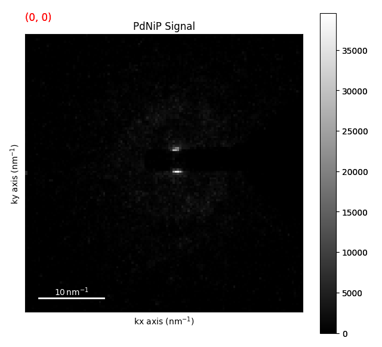
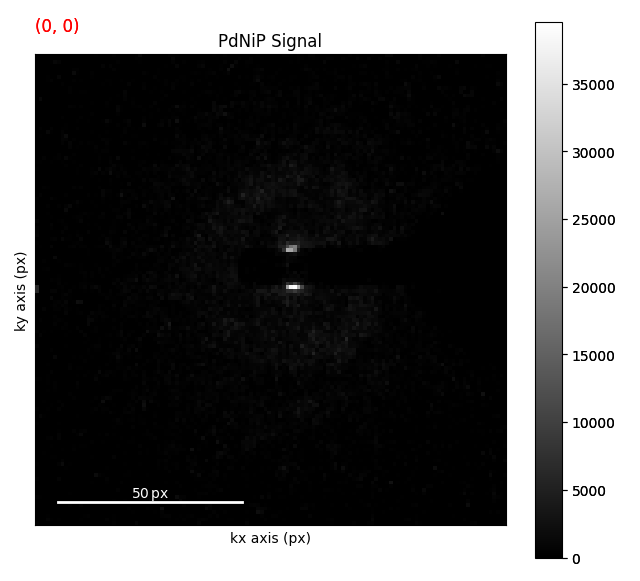

Note
Go to the end to download the full example code.
Flat Ewald’s Sphere Assumption#
In most cases, the Ewald’s sphere is assumed to be flat for diffraction patterns when doing 4D STEM. This is almost always a good assumption. That being said there are a couple of common units used with 4D STEM (e.g. nm-1, mrad, pixel coordinates) and it is important to understand how these units relate to each other. These units are also related to the camera length, pixel size, and beam energy (wavelength) of the microscope. In reality the beam energy is really the only thing that you need to know.
Let’s look at an example of this using the ZrNb Precipitate dataset.
from pyxem.data import pdnip_glass
g = pdnip_glass(allow_download=True)
g.calibration.beam_energy = "200 kV"
g.calibration.convergance_angle = "1 mrad" # set the convergence angle
0%| | 0.00/305M [00:00<?, ?B/s]
0%| | 12.3k/305M [00:00<45:18, 112kB/s]
0%| | 98.3k/305M [00:00<14:25, 352kB/s]
0%| | 229k/305M [00:00<09:47, 518kB/s]
0%| | 340k/305M [00:00<09:22, 541kB/s]
0%| | 487k/305M [00:00<08:07, 625kB/s]
0%| | 700k/305M [00:01<06:24, 791kB/s]
0%| | 913k/305M [00:01<05:39, 894kB/s]
0%|▏ | 1.13M/305M [00:01<05:15, 962kB/s]
0%|▏ | 1.36M/305M [00:01<04:53, 1.03MB/s]
0%|▏ | 1.52M/305M [00:01<05:10, 976kB/s]
1%|▏ | 1.77M/305M [00:01<04:00, 1.26MB/s]
1%|▏ | 1.92M/305M [00:02<04:37, 1.09MB/s]
1%|▎ | 2.07M/305M [00:02<05:03, 998kB/s]
1%|▎ | 2.29M/305M [00:02<04:53, 1.03MB/s]
1%|▎ | 2.47M/305M [00:02<05:01, 1.00MB/s]
1%|▎ | 2.70M/305M [00:02<04:45, 1.06MB/s]
1%|▎ | 2.89M/305M [00:03<04:48, 1.05MB/s]
1%|▍ | 3.10M/305M [00:03<04:43, 1.06MB/s]
1%|▍ | 3.30M/305M [00:03<04:46, 1.05MB/s]
1%|▍ | 3.51M/305M [00:03<04:42, 1.07MB/s]
1%|▍ | 3.73M/305M [00:03<04:39, 1.08MB/s]
1%|▍ | 3.95M/305M [00:04<04:32, 1.10MB/s]
1%|▌ | 4.15M/305M [00:04<04:38, 1.08MB/s]
1%|▌ | 4.36M/305M [00:04<04:36, 1.09MB/s]
1%|▌ | 4.54M/305M [00:04<04:48, 1.04MB/s]
2%|▌ | 4.84M/305M [00:04<04:12, 1.19MB/s]
2%|▋ | 5.10M/305M [00:05<04:01, 1.24MB/s]
2%|▋ | 5.30M/305M [00:05<04:15, 1.17MB/s]
2%|▋ | 5.51M/305M [00:05<04:19, 1.15MB/s]
2%|▋ | 5.84M/305M [00:05<03:47, 1.32MB/s]
2%|▊ | 6.06M/305M [00:05<03:54, 1.27MB/s]
2%|▊ | 6.32M/305M [00:05<03:49, 1.30MB/s]
2%|▊ | 6.55M/305M [00:06<03:55, 1.26MB/s]
2%|▊ | 6.80M/305M [00:06<03:55, 1.27MB/s]
2%|▉ | 7.09M/305M [00:06<03:41, 1.34MB/s]
2%|▉ | 7.32M/305M [00:06<03:49, 1.30MB/s]
2%|▉ | 7.54M/305M [00:06<03:59, 1.24MB/s]
3%|▉ | 7.75M/305M [00:07<04:07, 1.20MB/s]
3%|▉ | 7.96M/305M [00:07<04:13, 1.17MB/s]
3%|█ | 8.17M/305M [00:07<04:18, 1.14MB/s]
3%|█ | 8.47M/305M [00:07<03:55, 1.26MB/s]
3%|█ | 8.68M/305M [00:07<04:04, 1.21MB/s]
3%|█ | 8.89M/305M [00:08<04:10, 1.18MB/s]
3%|█▏ | 9.11M/305M [00:08<04:15, 1.16MB/s]
3%|█▏ | 9.33M/305M [00:08<04:12, 1.17MB/s]
3%|█▏ | 9.56M/305M [00:08<04:11, 1.18MB/s]
3%|█▏ | 9.79M/305M [00:08<04:10, 1.18MB/s]
3%|█▎ | 10.1M/305M [00:09<03:45, 1.30MB/s]
3%|█▎ | 10.3M/305M [00:09<04:13, 1.16MB/s]
3%|█▎ | 10.5M/305M [00:09<04:06, 1.20MB/s]
4%|█▎ | 10.7M/305M [00:09<04:11, 1.17MB/s]
4%|█▎ | 11.0M/305M [00:09<04:10, 1.17MB/s]
4%|█▍ | 11.2M/305M [00:10<04:09, 1.18MB/s]
4%|█▍ | 11.4M/305M [00:10<04:13, 1.16MB/s]
4%|█▍ | 11.6M/305M [00:10<04:16, 1.14MB/s]
4%|█▍ | 11.8M/305M [00:10<04:13, 1.15MB/s]
4%|█▌ | 12.1M/305M [00:10<04:16, 1.14MB/s]
4%|█▌ | 12.3M/305M [00:11<04:20, 1.12MB/s]
4%|█▌ | 12.5M/305M [00:11<04:21, 1.12MB/s]
4%|█▌ | 12.8M/305M [00:11<03:45, 1.29MB/s]
4%|█▌ | 13.0M/305M [00:11<04:01, 1.21MB/s]
4%|█▋ | 13.2M/305M [00:11<04:13, 1.15MB/s]
4%|█▋ | 13.4M/305M [00:11<04:10, 1.16MB/s]
4%|█▋ | 13.7M/305M [00:12<04:08, 1.17MB/s]
5%|█▋ | 13.9M/305M [00:12<04:07, 1.18MB/s]
5%|█▊ | 14.1M/305M [00:12<04:17, 1.13MB/s]
5%|█▊ | 14.3M/305M [00:12<04:07, 1.17MB/s]
5%|█▊ | 14.5M/305M [00:12<04:13, 1.14MB/s]
5%|█▊ | 14.7M/305M [00:13<04:16, 1.13MB/s]
5%|█▊ | 15.0M/305M [00:13<04:17, 1.12MB/s]
5%|█▉ | 15.3M/305M [00:13<03:43, 1.30MB/s]
5%|█▉ | 15.5M/305M [00:13<03:53, 1.24MB/s]
5%|█▉ | 15.7M/305M [00:13<04:01, 1.20MB/s]
5%|█▉ | 15.9M/305M [00:14<04:06, 1.17MB/s]
5%|██ | 16.1M/305M [00:14<04:16, 1.13MB/s]
5%|██ | 16.3M/305M [00:14<04:24, 1.09MB/s]
5%|██ | 16.6M/305M [00:14<04:12, 1.14MB/s]
5%|██ | 16.7M/305M [00:14<04:33, 1.05MB/s]
6%|██ | 17.0M/305M [00:15<04:22, 1.09MB/s]
6%|██▏ | 17.2M/305M [00:15<04:21, 1.10MB/s]
6%|██▏ | 17.4M/305M [00:15<04:21, 1.10MB/s]
6%|██▏ | 17.6M/305M [00:15<04:20, 1.10MB/s]
6%|██▏ | 17.8M/305M [00:15<04:14, 1.13MB/s]
6%|██▎ | 18.1M/305M [00:16<04:04, 1.17MB/s]
6%|██▎ | 18.3M/305M [00:16<03:58, 1.20MB/s]
6%|██▎ | 18.5M/305M [00:16<04:04, 1.17MB/s]
6%|██▎ | 18.7M/305M [00:16<04:15, 1.12MB/s]
6%|██▎ | 18.9M/305M [00:16<04:10, 1.14MB/s]
6%|██▍ | 19.3M/305M [00:17<03:42, 1.28MB/s]
6%|██▍ | 19.5M/305M [00:17<03:47, 1.25MB/s]
6%|██▍ | 19.7M/305M [00:17<04:00, 1.18MB/s]
7%|██▍ | 19.9M/305M [00:17<04:00, 1.18MB/s]
7%|██▌ | 20.1M/305M [00:17<04:10, 1.13MB/s]
7%|██▌ | 20.3M/305M [00:17<04:07, 1.15MB/s]
7%|██▌ | 20.6M/305M [00:18<04:00, 1.18MB/s]
7%|██▌ | 20.8M/305M [00:18<04:01, 1.18MB/s]
7%|██▌ | 21.0M/305M [00:18<04:00, 1.18MB/s]
7%|██▋ | 21.2M/305M [00:18<04:10, 1.13MB/s]
7%|██▋ | 21.5M/305M [00:18<04:06, 1.15MB/s]
7%|██▋ | 21.7M/305M [00:19<03:58, 1.19MB/s]
7%|██▋ | 22.0M/305M [00:19<03:52, 1.21MB/s]
7%|██▊ | 22.2M/305M [00:19<04:04, 1.16MB/s]
7%|██▊ | 22.4M/305M [00:19<04:07, 1.14MB/s]
7%|██▊ | 22.6M/305M [00:19<04:09, 1.13MB/s]
7%|██▊ | 22.8M/305M [00:20<03:56, 1.19MB/s]
8%|██▉ | 23.1M/305M [00:20<03:46, 1.24MB/s]
8%|██▉ | 23.3M/305M [00:20<03:59, 1.18MB/s]
8%|██▉ | 23.5M/305M [00:20<04:09, 1.13MB/s]
8%|██▉ | 23.8M/305M [00:20<03:40, 1.27MB/s]
8%|██▉ | 24.0M/305M [00:21<03:44, 1.25MB/s]
8%|███ | 24.2M/305M [00:21<03:57, 1.18MB/s]
8%|███ | 24.5M/305M [00:21<03:57, 1.18MB/s]
8%|███ | 24.7M/305M [00:21<04:07, 1.13MB/s]
8%|███ | 24.9M/305M [00:21<04:10, 1.12MB/s]
8%|███▏ | 25.1M/305M [00:22<04:05, 1.14MB/s]
8%|███▏ | 25.3M/305M [00:22<03:56, 1.18MB/s]
8%|███▏ | 25.6M/305M [00:22<03:50, 1.21MB/s]
8%|███▏ | 25.8M/305M [00:22<03:56, 1.18MB/s]
9%|███▏ | 26.0M/305M [00:22<04:01, 1.16MB/s]
9%|███▎ | 26.2M/305M [00:22<04:04, 1.14MB/s]
9%|███▎ | 26.4M/305M [00:23<04:06, 1.13MB/s]
9%|███▎ | 26.6M/305M [00:23<04:07, 1.12MB/s]
9%|███▎ | 26.9M/305M [00:23<04:08, 1.12MB/s]
9%|███▍ | 27.1M/305M [00:23<04:11, 1.11MB/s]
9%|███▍ | 27.3M/305M [00:23<04:11, 1.10MB/s]
9%|███▍ | 27.5M/305M [00:24<04:11, 1.10MB/s]
9%|███▍ | 27.7M/305M [00:24<04:18, 1.07MB/s]
9%|███▍ | 28.0M/305M [00:24<03:59, 1.16MB/s]
9%|███▌ | 28.2M/305M [00:24<04:02, 1.14MB/s]
9%|███▌ | 28.4M/305M [00:24<04:10, 1.10MB/s]
9%|███▌ | 28.6M/305M [00:25<03:48, 1.21MB/s]
9%|███▌ | 28.9M/305M [00:25<03:31, 1.30MB/s]
10%|███▋ | 29.1M/305M [00:25<03:42, 1.24MB/s]
10%|███▋ | 29.4M/305M [00:25<03:49, 1.20MB/s]
10%|███▋ | 29.5M/305M [00:25<04:11, 1.09MB/s]
10%|███▋ | 29.8M/305M [00:26<04:04, 1.12MB/s]
10%|███▋ | 30.0M/305M [00:26<03:50, 1.19MB/s]
10%|███▊ | 30.4M/305M [00:26<03:12, 1.42MB/s]
10%|███▊ | 30.6M/305M [00:26<03:23, 1.35MB/s]
10%|███▊ | 30.9M/305M [00:26<03:18, 1.38MB/s]
10%|███▉ | 31.1M/305M [00:27<03:23, 1.35MB/s]
10%|███▉ | 31.4M/305M [00:27<03:35, 1.27MB/s]
10%|███▉ | 31.6M/305M [00:27<03:44, 1.22MB/s]
10%|███▉ | 31.8M/305M [00:27<03:45, 1.21MB/s]
11%|███▉ | 32.0M/305M [00:27<03:46, 1.20MB/s]
11%|████ | 32.3M/305M [00:28<03:47, 1.20MB/s]
11%|████ | 32.5M/305M [00:28<03:52, 1.17MB/s]
11%|████ | 32.7M/305M [00:28<03:46, 1.20MB/s]
11%|████ | 33.1M/305M [00:28<03:17, 1.38MB/s]
11%|████▏ | 33.3M/305M [00:28<03:29, 1.29MB/s]
11%|████▏ | 33.5M/305M [00:28<03:23, 1.33MB/s]
11%|████▏ | 33.8M/305M [00:29<03:34, 1.26MB/s]
11%|████▏ | 34.0M/305M [00:29<03:33, 1.27MB/s]
11%|████▎ | 34.3M/305M [00:29<03:32, 1.27MB/s]
11%|████▎ | 34.5M/305M [00:29<03:28, 1.30MB/s]
11%|████▎ | 34.7M/305M [00:29<03:33, 1.26MB/s]
11%|████▎ | 35.0M/305M [00:30<03:37, 1.24MB/s]
12%|████▍ | 35.2M/305M [00:30<03:44, 1.20MB/s]
12%|████▍ | 35.3M/305M [00:30<04:12, 1.07MB/s]
12%|████▍ | 35.6M/305M [00:30<03:59, 1.12MB/s]
12%|████▍ | 35.8M/305M [00:30<04:00, 1.12MB/s]
12%|████▍ | 36.0M/305M [00:31<03:56, 1.14MB/s]
12%|████▌ | 36.2M/305M [00:31<03:53, 1.15MB/s]
12%|████▌ | 36.5M/305M [00:31<03:55, 1.14MB/s]
12%|████▌ | 36.7M/305M [00:31<04:03, 1.10MB/s]
12%|████▌ | 37.0M/305M [00:31<03:37, 1.23MB/s]
12%|████▋ | 37.2M/305M [00:32<03:39, 1.22MB/s]
12%|████▋ | 37.4M/305M [00:32<03:32, 1.26MB/s]
12%|████▋ | 37.7M/305M [00:32<03:32, 1.26MB/s]
12%|████▋ | 37.9M/305M [00:32<03:35, 1.24MB/s]
13%|████▊ | 38.3M/305M [00:32<03:10, 1.40MB/s]
13%|████▊ | 38.5M/305M [00:33<03:18, 1.34MB/s]
13%|████▊ | 38.7M/305M [00:33<03:33, 1.24MB/s]
13%|████▊ | 39.0M/305M [00:33<03:12, 1.38MB/s]
13%|████▉ | 39.2M/305M [00:33<03:24, 1.30MB/s]
13%|████▉ | 39.4M/305M [00:33<03:33, 1.24MB/s]
13%|████▉ | 39.7M/305M [00:33<03:28, 1.27MB/s]
13%|████▉ | 39.9M/305M [00:34<03:37, 1.22MB/s]
13%|█████ | 40.1M/305M [00:34<03:38, 1.21MB/s]
13%|█████ | 40.4M/305M [00:34<03:18, 1.33MB/s]
13%|█████ | 40.8M/305M [00:34<03:00, 1.46MB/s]
13%|█████ | 41.1M/305M [00:34<03:04, 1.43MB/s]
14%|█████▏ | 41.3M/305M [00:35<03:13, 1.36MB/s]
14%|█████▏ | 41.5M/305M [00:35<03:21, 1.31MB/s]
14%|█████▏ | 41.7M/305M [00:35<03:30, 1.25MB/s]
14%|█████▏ | 41.9M/305M [00:35<03:39, 1.20MB/s]
14%|█████▎ | 42.1M/305M [00:35<03:49, 1.14MB/s]
14%|█████▎ | 42.3M/305M [00:36<03:51, 1.13MB/s]
14%|█████▎ | 42.6M/305M [00:36<03:47, 1.15MB/s]
14%|█████▎ | 42.8M/305M [00:36<03:55, 1.11MB/s]
14%|█████▎ | 43.0M/305M [00:36<03:36, 1.21MB/s]
14%|█████▍ | 43.3M/305M [00:36<03:24, 1.28MB/s]
14%|█████▍ | 43.6M/305M [00:37<03:24, 1.28MB/s]
14%|█████▍ | 43.9M/305M [00:37<03:16, 1.33MB/s]
14%|█████▍ | 44.1M/305M [00:37<03:23, 1.28MB/s]
15%|█████▌ | 44.3M/305M [00:37<03:27, 1.25MB/s]
15%|█████▌ | 44.6M/305M [00:37<03:14, 1.34MB/s]
15%|█████▌ | 44.8M/305M [00:38<03:29, 1.24MB/s]
15%|█████▌ | 45.0M/305M [00:38<03:27, 1.25MB/s]
15%|█████▋ | 45.3M/305M [00:38<03:35, 1.21MB/s]
15%|█████▋ | 45.5M/305M [00:38<03:40, 1.18MB/s]
15%|█████▋ | 45.7M/305M [00:38<03:44, 1.15MB/s]
15%|█████▋ | 45.9M/305M [00:39<03:47, 1.14MB/s]
15%|█████▊ | 46.1M/305M [00:39<03:50, 1.12MB/s]
15%|█████▊ | 46.3M/305M [00:39<03:51, 1.12MB/s]
15%|█████▊ | 46.5M/305M [00:39<03:52, 1.11MB/s]
15%|█████▊ | 46.7M/305M [00:39<03:57, 1.08MB/s]
15%|█████▊ | 47.0M/305M [00:39<03:50, 1.12MB/s]
15%|█████▉ | 47.1M/305M [00:40<04:02, 1.06MB/s]
16%|█████▉ | 47.3M/305M [00:40<03:59, 1.08MB/s]
16%|█████▉ | 47.6M/305M [00:40<03:46, 1.13MB/s]
16%|█████▉ | 47.8M/305M [00:40<03:48, 1.13MB/s]
16%|█████▉ | 48.0M/305M [00:40<03:49, 1.12MB/s]
16%|██████ | 48.3M/305M [00:41<03:36, 1.18MB/s]
16%|██████ | 48.4M/305M [00:41<03:37, 1.18MB/s]
16%|██████ | 48.6M/305M [00:41<03:33, 1.20MB/s]
16%|██████ | 48.9M/305M [00:41<03:33, 1.20MB/s]
16%|██████▏ | 49.1M/305M [00:41<03:29, 1.22MB/s]
16%|██████▏ | 49.3M/305M [00:42<03:30, 1.21MB/s]
16%|██████▏ | 49.5M/305M [00:42<03:41, 1.15MB/s]
16%|██████▏ | 49.8M/305M [00:42<03:34, 1.19MB/s]
16%|██████▏ | 50.0M/305M [00:42<03:38, 1.16MB/s]
16%|██████▎ | 50.2M/305M [00:42<03:46, 1.12MB/s]
17%|██████▎ | 50.4M/305M [00:42<03:44, 1.13MB/s]
17%|██████▎ | 50.6M/305M [00:43<03:45, 1.13MB/s]
17%|██████▎ | 50.8M/305M [00:43<03:46, 1.12MB/s]
17%|██████▎ | 51.1M/305M [00:43<03:47, 1.12MB/s]
17%|██████▍ | 51.2M/305M [00:43<03:58, 1.06MB/s]
17%|██████▍ | 51.4M/305M [00:43<04:07, 1.02MB/s]
17%|██████▍ | 51.7M/305M [00:44<03:30, 1.20MB/s]
17%|██████▍ | 51.9M/305M [00:44<03:40, 1.15MB/s]
17%|██████▌ | 52.2M/305M [00:44<03:20, 1.26MB/s]
17%|██████▌ | 52.5M/305M [00:44<03:21, 1.25MB/s]
17%|██████▌ | 52.7M/305M [00:44<03:28, 1.21MB/s]
17%|██████▌ | 52.9M/305M [00:45<03:34, 1.18MB/s]
17%|██████▌ | 53.1M/305M [00:45<03:37, 1.15MB/s]
17%|██████▋ | 53.3M/305M [00:45<03:56, 1.06MB/s]
18%|██████▋ | 53.5M/305M [00:45<03:53, 1.08MB/s]
18%|██████▋ | 53.7M/305M [00:45<03:40, 1.14MB/s]
18%|██████▋ | 53.9M/305M [00:46<03:58, 1.05MB/s]
18%|██████▋ | 54.1M/305M [00:46<03:54, 1.07MB/s]
18%|██████▊ | 54.3M/305M [00:46<03:41, 1.13MB/s]
18%|██████▊ | 54.6M/305M [00:46<03:44, 1.12MB/s]
18%|██████▊ | 54.8M/305M [00:46<03:49, 1.09MB/s]
18%|██████▊ | 55.0M/305M [00:47<03:43, 1.12MB/s]
18%|██████▉ | 55.2M/305M [00:47<03:43, 1.11MB/s]
18%|██████▉ | 55.5M/305M [00:47<03:21, 1.24MB/s]
18%|██████▉ | 55.7M/305M [00:47<03:23, 1.22MB/s]
18%|██████▉ | 55.9M/305M [00:47<03:29, 1.19MB/s]
18%|███████ | 56.2M/305M [00:47<03:29, 1.19MB/s]
18%|███████ | 56.3M/305M [00:48<03:48, 1.09MB/s]
19%|███████ | 56.5M/305M [00:48<03:47, 1.09MB/s]
19%|███████ | 56.8M/305M [00:48<03:37, 1.14MB/s]
19%|███████ | 57.0M/305M [00:48<03:39, 1.13MB/s]
19%|███████▏ | 57.1M/305M [00:48<04:02, 1.02MB/s]
19%|███████▏ | 57.4M/305M [00:49<03:50, 1.07MB/s]
19%|███████▏ | 57.6M/305M [00:49<03:38, 1.13MB/s]
19%|███████▏ | 57.8M/305M [00:49<03:39, 1.12MB/s]
19%|███████▏ | 58.0M/305M [00:49<03:40, 1.12MB/s]
19%|███████▎ | 58.3M/305M [00:49<03:41, 1.11MB/s]
19%|███████▎ | 58.5M/305M [00:50<03:41, 1.11MB/s]
19%|███████▎ | 58.7M/305M [00:50<03:33, 1.15MB/s]
19%|███████▎ | 58.9M/305M [00:50<03:31, 1.16MB/s]
19%|███████▍ | 59.2M/305M [00:50<03:29, 1.17MB/s]
20%|███████▍ | 59.4M/305M [00:50<03:19, 1.23MB/s]
20%|███████▍ | 59.8M/305M [00:51<02:59, 1.37MB/s]
20%|███████▍ | 60.1M/305M [00:51<02:47, 1.46MB/s]
20%|███████▌ | 60.3M/305M [00:51<03:03, 1.33MB/s]
20%|███████▌ | 60.5M/305M [00:51<03:13, 1.26MB/s]
20%|███████▌ | 60.7M/305M [00:51<03:20, 1.22MB/s]
20%|███████▌ | 61.0M/305M [00:52<03:07, 1.30MB/s]
20%|███████▋ | 61.2M/305M [00:52<03:08, 1.29MB/s]
20%|███████▋ | 61.5M/305M [00:52<03:16, 1.24MB/s]
20%|███████▋ | 61.7M/305M [00:52<03:23, 1.20MB/s]
20%|███████▋ | 62.0M/305M [00:52<02:53, 1.40MB/s]
20%|███████▊ | 62.3M/305M [00:53<02:58, 1.36MB/s]
21%|███████▊ | 62.5M/305M [00:53<03:16, 1.23MB/s]
21%|███████▊ | 62.7M/305M [00:53<03:18, 1.22MB/s]
21%|███████▊ | 62.9M/305M [00:53<03:20, 1.20MB/s]
21%|███████▊ | 63.1M/305M [00:53<03:25, 1.17MB/s]
21%|███████▉ | 63.3M/305M [00:53<03:29, 1.15MB/s]
21%|███████▉ | 63.7M/305M [00:54<02:55, 1.37MB/s]
21%|███████▉ | 63.9M/305M [00:54<03:06, 1.29MB/s]
21%|████████ | 64.1M/305M [00:54<03:11, 1.26MB/s]
21%|████████ | 64.4M/305M [00:54<03:14, 1.24MB/s]
21%|████████ | 64.6M/305M [00:54<03:20, 1.20MB/s]
21%|████████ | 64.8M/305M [00:55<03:34, 1.12MB/s]
21%|████████▏ | 65.2M/305M [00:55<02:43, 1.46MB/s]
21%|████████▏ | 65.4M/305M [00:55<02:52, 1.38MB/s]
22%|████████▏ | 65.6M/305M [00:55<03:03, 1.30MB/s]
22%|████████▏ | 65.9M/305M [00:55<03:01, 1.32MB/s]
22%|████████▎ | 66.2M/305M [00:56<02:52, 1.38MB/s]
22%|████████▎ | 66.5M/305M [00:56<02:46, 1.43MB/s]
22%|████████▎ | 66.6M/305M [00:56<02:47, 1.42MB/s]
22%|████████▎ | 66.9M/305M [00:56<02:57, 1.34MB/s]
22%|████████▎ | 67.1M/305M [00:56<03:07, 1.27MB/s]
22%|████████▍ | 67.3M/305M [00:56<03:16, 1.21MB/s]
22%|████████▍ | 67.5M/305M [00:57<03:26, 1.15MB/s]
22%|████████▍ | 67.7M/305M [00:57<03:44, 1.05MB/s]
22%|████████▍ | 67.9M/305M [00:57<03:31, 1.12MB/s]
22%|████████▍ | 68.1M/305M [00:57<03:31, 1.12MB/s]
22%|████████▌ | 68.3M/305M [00:57<03:32, 1.11MB/s]
23%|████████▌ | 68.6M/305M [00:58<03:28, 1.13MB/s]
23%|████████▌ | 68.8M/305M [00:58<03:25, 1.15MB/s]
23%|████████▌ | 69.0M/305M [00:58<03:32, 1.11MB/s]
23%|████████▋ | 69.3M/305M [00:58<03:11, 1.23MB/s]
23%|████████▋ | 69.5M/305M [00:58<03:09, 1.24MB/s]
23%|████████▋ | 69.8M/305M [00:59<03:07, 1.25MB/s]
23%|████████▋ | 70.0M/305M [00:59<03:10, 1.23MB/s]
23%|████████▊ | 70.2M/305M [00:59<03:16, 1.19MB/s]
23%|████████▊ | 70.5M/305M [00:59<03:12, 1.22MB/s]
23%|████████▊ | 70.7M/305M [00:59<03:17, 1.18MB/s]
23%|████████▊ | 70.9M/305M [01:00<03:21, 1.16MB/s]
23%|████████▊ | 71.1M/305M [01:00<03:28, 1.12MB/s]
23%|████████▉ | 71.3M/305M [01:00<03:29, 1.12MB/s]
23%|████████▉ | 71.5M/305M [01:00<03:36, 1.08MB/s]
24%|████████▉ | 71.7M/305M [01:00<03:29, 1.11MB/s]
24%|████████▉ | 71.9M/305M [01:01<03:29, 1.11MB/s]
24%|████████▉ | 72.1M/305M [01:01<03:39, 1.06MB/s]
24%|█████████ | 72.3M/305M [01:01<03:31, 1.10MB/s]
24%|█████████ | 72.5M/305M [01:01<03:41, 1.05MB/s]
24%|█████████ | 72.7M/305M [01:01<03:37, 1.06MB/s]
24%|█████████ | 73.0M/305M [01:01<03:25, 1.13MB/s]
24%|█████████▏ | 73.2M/305M [01:02<03:31, 1.09MB/s]
24%|█████████▏ | 73.4M/305M [01:02<03:30, 1.10MB/s]
24%|█████████▏ | 73.6M/305M [01:02<03:26, 1.12MB/s]
24%|█████████▏ | 73.9M/305M [01:02<02:43, 1.42MB/s]
24%|█████████▏ | 74.0M/305M [01:02<03:07, 1.23MB/s]
24%|█████████▎ | 74.2M/305M [01:03<03:36, 1.07MB/s]
24%|█████████▎ | 74.4M/305M [01:03<03:29, 1.10MB/s]
24%|█████████▎ | 74.6M/305M [01:03<03:34, 1.07MB/s]
25%|█████████▎ | 74.9M/305M [01:03<03:22, 1.13MB/s]
25%|█████████▎ | 75.1M/305M [01:03<03:23, 1.13MB/s]
25%|█████████▍ | 75.3M/305M [01:04<03:24, 1.12MB/s]
25%|█████████▍ | 75.5M/305M [01:04<03:25, 1.11MB/s]
25%|█████████▍ | 75.7M/305M [01:04<03:27, 1.10MB/s]
25%|█████████▍ | 76.1M/305M [01:04<02:48, 1.36MB/s]
25%|█████████▌ | 76.3M/305M [01:04<02:58, 1.28MB/s]
25%|█████████▌ | 76.5M/305M [01:04<02:58, 1.28MB/s]
25%|█████████▌ | 76.8M/305M [01:05<03:05, 1.23MB/s]
25%|█████████▌ | 77.0M/305M [01:05<03:03, 1.24MB/s]
25%|█████████▋ | 77.2M/305M [01:05<03:05, 1.22MB/s]
25%|█████████▋ | 77.5M/305M [01:05<03:07, 1.21MB/s]
25%|█████████▋ | 77.7M/305M [01:05<03:16, 1.16MB/s]
26%|█████████▋ | 77.9M/305M [01:06<03:03, 1.23MB/s]
26%|█████████▋ | 78.1M/305M [01:06<03:09, 1.19MB/s]
26%|█████████▊ | 78.4M/305M [01:06<03:01, 1.24MB/s]
26%|█████████▊ | 78.6M/305M [01:06<03:00, 1.25MB/s]
26%|█████████▊ | 78.9M/305M [01:06<03:06, 1.21MB/s]
26%|█████████▉ | 79.2M/305M [01:07<02:46, 1.35MB/s]
26%|█████████▉ | 79.4M/305M [01:07<02:55, 1.28MB/s]
26%|█████████▉ | 79.6M/305M [01:07<03:03, 1.23MB/s]
26%|█████████▉ | 79.9M/305M [01:07<02:48, 1.34MB/s]
26%|█████████▉ | 80.2M/305M [01:07<02:53, 1.29MB/s]
26%|██████████ | 80.4M/305M [01:08<02:57, 1.26MB/s]
26%|██████████ | 80.6M/305M [01:08<03:12, 1.16MB/s]
27%|██████████ | 80.8M/305M [01:08<03:07, 1.20MB/s]
27%|██████████ | 81.1M/305M [01:08<02:59, 1.25MB/s]
27%|██████████▏ | 81.3M/305M [01:08<03:05, 1.20MB/s]
27%|██████████▏ | 81.5M/305M [01:09<02:58, 1.25MB/s]
27%|██████████▏ | 81.8M/305M [01:09<03:04, 1.21MB/s]
27%|██████████▏ | 82.0M/305M [01:09<03:10, 1.17MB/s]
27%|██████████▎ | 82.2M/305M [01:09<03:09, 1.17MB/s]
27%|██████████▎ | 82.5M/305M [01:09<02:53, 1.28MB/s]
27%|██████████▎ | 82.7M/305M [01:09<03:00, 1.23MB/s]
27%|██████████▎ | 82.9M/305M [01:10<03:06, 1.19MB/s]
27%|██████████▎ | 83.1M/305M [01:10<03:06, 1.19MB/s]
27%|██████████▍ | 83.4M/305M [01:10<03:10, 1.16MB/s]
27%|██████████▍ | 83.6M/305M [01:10<02:57, 1.25MB/s]
28%|██████████▍ | 83.9M/305M [01:10<02:59, 1.23MB/s]
28%|██████████▍ | 84.1M/305M [01:11<03:02, 1.21MB/s]
28%|██████████▌ | 84.3M/305M [01:11<03:07, 1.18MB/s]
28%|██████████▌ | 84.5M/305M [01:11<03:10, 1.16MB/s]
28%|██████████▌ | 84.8M/305M [01:11<02:50, 1.29MB/s]
28%|██████████▌ | 85.0M/305M [01:11<03:05, 1.19MB/s]
28%|██████████▋ | 85.3M/305M [01:12<03:01, 1.21MB/s]
28%|██████████▋ | 85.5M/305M [01:12<03:05, 1.18MB/s]
28%|██████████▋ | 85.7M/305M [01:12<03:09, 1.16MB/s]
28%|██████████▋ | 85.8M/305M [01:12<03:30, 1.04MB/s]
28%|██████████▋ | 86.1M/305M [01:12<03:16, 1.11MB/s]
28%|██████████▊ | 86.3M/305M [01:13<03:09, 1.15MB/s]
28%|██████████▊ | 86.5M/305M [01:13<03:15, 1.11MB/s]
28%|██████████▊ | 86.7M/305M [01:13<03:11, 1.14MB/s]
29%|██████████▊ | 87.0M/305M [01:13<03:13, 1.13MB/s]
29%|██████████▊ | 87.2M/305M [01:13<03:18, 1.09MB/s]
29%|██████████▉ | 87.4M/305M [01:14<03:17, 1.10MB/s]
29%|██████████▉ | 87.6M/305M [01:14<03:12, 1.12MB/s]
29%|██████████▉ | 87.8M/305M [01:14<03:18, 1.09MB/s]
29%|██████████▉ | 88.0M/305M [01:14<03:17, 1.10MB/s]
29%|███████████ | 88.2M/305M [01:14<03:16, 1.10MB/s]
29%|███████████ | 88.4M/305M [01:15<03:12, 1.12MB/s]
29%|███████████ | 88.7M/305M [01:15<03:13, 1.12MB/s]
29%|███████████ | 88.8M/305M [01:15<03:33, 1.01MB/s]
29%|███████████ | 89.1M/305M [01:15<03:01, 1.19MB/s]
29%|███████████▏ | 89.4M/305M [01:15<02:57, 1.22MB/s]
29%|███████████▏ | 89.5M/305M [01:15<03:10, 1.13MB/s]
29%|███████████▏ | 89.8M/305M [01:16<03:03, 1.17MB/s]
30%|███████████▏ | 90.0M/305M [01:16<03:06, 1.15MB/s]
30%|███████████▎ | 90.2M/305M [01:16<03:08, 1.14MB/s]
30%|███████████▎ | 90.4M/305M [01:16<03:10, 1.12MB/s]
30%|███████████▎ | 90.6M/305M [01:16<03:11, 1.12MB/s]
30%|███████████▎ | 90.9M/305M [01:17<02:59, 1.19MB/s]
30%|███████████▎ | 91.2M/305M [01:17<02:48, 1.26MB/s]
30%|███████████▍ | 91.4M/305M [01:17<02:48, 1.27MB/s]
30%|███████████▍ | 91.8M/305M [01:17<02:29, 1.42MB/s]
30%|███████████▍ | 92.0M/305M [01:17<02:34, 1.38MB/s]
30%|███████████▌ | 92.2M/305M [01:18<02:44, 1.29MB/s]
30%|███████████▌ | 92.4M/305M [01:18<02:51, 1.23MB/s]
30%|███████████▌ | 92.6M/305M [01:18<02:58, 1.19MB/s]
30%|███████████▌ | 92.9M/305M [01:18<03:02, 1.16MB/s]
31%|███████████▌ | 93.1M/305M [01:18<03:04, 1.15MB/s]
31%|███████████▋ | 93.2M/305M [01:19<03:19, 1.06MB/s]
31%|███████████▋ | 93.5M/305M [01:19<03:08, 1.12MB/s]
31%|███████████▋ | 93.7M/305M [01:19<03:08, 1.12MB/s]
31%|███████████▋ | 93.9M/305M [01:19<03:09, 1.11MB/s]
31%|███████████▋ | 94.1M/305M [01:19<03:09, 1.11MB/s]
31%|███████████▊ | 94.3M/305M [01:20<03:09, 1.11MB/s]
31%|███████████▊ | 94.6M/305M [01:20<02:50, 1.23MB/s]
31%|███████████▊ | 94.8M/305M [01:20<02:56, 1.19MB/s]
31%|███████████▊ | 95.0M/305M [01:20<03:03, 1.14MB/s]
31%|███████████▉ | 95.2M/305M [01:20<03:05, 1.13MB/s]
31%|███████████▉ | 95.5M/305M [01:20<03:06, 1.12MB/s]
31%|███████████▉ | 95.7M/305M [01:21<03:02, 1.14MB/s]
31%|███████████▉ | 95.9M/305M [01:21<03:04, 1.13MB/s]
32%|███████████▉ | 96.1M/305M [01:21<03:19, 1.05MB/s]
32%|████████████ | 96.3M/305M [01:21<03:11, 1.09MB/s]
32%|████████████ | 96.5M/305M [01:21<03:01, 1.15MB/s]
32%|████████████ | 96.7M/305M [01:22<03:04, 1.13MB/s]
32%|████████████ | 97.0M/305M [01:22<03:05, 1.12MB/s]
32%|████████████ | 97.2M/305M [01:22<03:05, 1.12MB/s]
32%|████████████▏ | 97.4M/305M [01:22<03:06, 1.11MB/s]
32%|████████████▏ | 97.6M/305M [01:22<03:10, 1.09MB/s]
32%|████████████▏ | 97.8M/305M [01:23<03:05, 1.12MB/s]
32%|████████████▏ | 98.0M/305M [01:23<03:05, 1.11MB/s]
32%|████████████▎ | 98.2M/305M [01:23<03:05, 1.11MB/s]
32%|████████████▎ | 98.5M/305M [01:23<03:06, 1.11MB/s]
32%|████████████▎ | 98.7M/305M [01:23<03:06, 1.11MB/s]
32%|████████████▎ | 98.9M/305M [01:24<03:07, 1.10MB/s]
33%|████████████▎ | 99.1M/305M [01:24<03:06, 1.10MB/s]
33%|████████████▍ | 99.3M/305M [01:24<03:06, 1.10MB/s]
33%|████████████▍ | 99.7M/305M [01:24<02:33, 1.33MB/s]
33%|████████████▊ | 100M/305M [01:24<02:19, 1.47MB/s]
33%|████████████▊ | 100M/305M [01:25<02:30, 1.36MB/s]
33%|████████████▊ | 100M/305M [01:25<02:39, 1.28MB/s]
33%|████████████▉ | 101M/305M [01:25<02:45, 1.23MB/s]
33%|████████████▉ | 101M/305M [01:25<02:34, 1.32MB/s]
33%|████████████▉ | 101M/305M [01:25<02:42, 1.25MB/s]
33%|████████████▉ | 101M/305M [01:26<02:45, 1.23MB/s]
33%|█████████████ | 102M/305M [01:26<02:50, 1.19MB/s]
33%|█████████████ | 102M/305M [01:26<02:58, 1.14MB/s]
33%|█████████████ | 102M/305M [01:26<02:55, 1.15MB/s]
34%|█████████████ | 102M/305M [01:26<03:01, 1.11MB/s]
34%|█████████████ | 102M/305M [01:26<03:02, 1.11MB/s]
34%|█████████████▏ | 103M/305M [01:27<02:58, 1.13MB/s]
34%|█████████████▏ | 103M/305M [01:27<02:55, 1.15MB/s]
34%|█████████████▏ | 103M/305M [01:27<02:43, 1.23MB/s]
34%|█████████████▏ | 103M/305M [01:27<02:45, 1.22MB/s]
34%|█████████████▎ | 104M/305M [01:27<03:01, 1.11MB/s]
34%|█████████████▎ | 104M/305M [01:28<02:46, 1.21MB/s]
34%|█████████████▎ | 104M/305M [01:28<02:30, 1.33MB/s]
34%|█████████████▎ | 104M/305M [01:28<02:38, 1.26MB/s]
34%|█████████████▍ | 105M/305M [01:28<02:44, 1.21MB/s]
34%|█████████████▍ | 105M/305M [01:28<02:49, 1.18MB/s]
34%|█████████████▍ | 105M/305M [01:29<02:52, 1.16MB/s]
35%|█████████████▍ | 105M/305M [01:29<02:55, 1.14MB/s]
35%|█████████████▌ | 105M/305M [01:29<02:38, 1.25MB/s]
35%|█████████████▌ | 106M/305M [01:29<02:41, 1.23MB/s]
35%|█████████████▌ | 106M/305M [01:29<02:46, 1.20MB/s]
35%|█████████████▌ | 106M/305M [01:30<03:01, 1.09MB/s]
35%|█████████████▌ | 106M/305M [01:30<02:45, 1.20MB/s]
35%|█████████████▋ | 107M/305M [01:30<02:49, 1.17MB/s]
35%|█████████████▋ | 107M/305M [01:30<02:56, 1.12MB/s]
35%|█████████████▋ | 107M/305M [01:30<02:52, 1.14MB/s]
35%|█████████████▋ | 107M/305M [01:31<02:58, 1.11MB/s]
35%|█████████████▊ | 108M/305M [01:31<02:37, 1.25MB/s]
35%|█████████████▊ | 108M/305M [01:31<02:42, 1.21MB/s]
35%|█████████████▊ | 108M/305M [01:31<02:43, 1.20MB/s]
36%|█████████████▊ | 108M/305M [01:31<02:47, 1.17MB/s]
36%|█████████████▉ | 109M/305M [01:31<02:27, 1.33MB/s]
36%|█████████████▉ | 109M/305M [01:32<02:23, 1.36MB/s]
36%|█████████████▉ | 109M/305M [01:32<02:26, 1.34MB/s]
36%|█████████████▉ | 109M/305M [01:32<02:34, 1.27MB/s]
36%|██████████████ | 110M/305M [01:32<02:20, 1.39MB/s]
36%|██████████████ | 110M/305M [01:32<02:26, 1.33MB/s]
36%|██████████████ | 110M/305M [01:33<02:34, 1.26MB/s]
36%|██████████████ | 110M/305M [01:33<02:40, 1.21MB/s]
36%|██████████████▏ | 110M/305M [01:33<02:41, 1.20MB/s]
36%|██████████████▏ | 111M/305M [01:33<02:52, 1.12MB/s]
36%|██████████████▏ | 111M/305M [01:33<02:45, 1.17MB/s]
36%|██████████████▏ | 111M/305M [01:34<02:48, 1.15MB/s]
37%|██████████████▏ | 111M/305M [01:34<02:50, 1.14MB/s]
37%|██████████████▎ | 112M/305M [01:34<02:51, 1.13MB/s]
37%|██████████████▎ | 112M/305M [01:34<03:05, 1.04MB/s]
37%|██████████████▎ | 112M/305M [01:34<02:57, 1.08MB/s]
37%|██████████████▎ | 112M/305M [01:35<02:52, 1.12MB/s]
37%|██████████████▍ | 112M/305M [01:35<02:53, 1.11MB/s]
37%|██████████████▍ | 113M/305M [01:35<02:53, 1.11MB/s]
37%|██████████████▍ | 113M/305M [01:35<02:53, 1.11MB/s]
37%|██████████████▍ | 113M/305M [01:35<02:53, 1.11MB/s]
37%|██████████████▍ | 113M/305M [01:36<03:01, 1.05MB/s]
37%|██████████████▌ | 113M/305M [01:36<02:54, 1.09MB/s]
37%|██████████████▌ | 114M/305M [01:36<02:50, 1.12MB/s]
37%|██████████████▌ | 114M/305M [01:36<02:51, 1.11MB/s]
37%|██████████████▌ | 114M/305M [01:36<02:37, 1.21MB/s]
38%|██████████████▋ | 114M/305M [01:37<02:38, 1.20MB/s]
38%|██████████████▋ | 115M/305M [01:37<02:38, 1.20MB/s]
38%|██████████████▋ | 115M/305M [01:37<02:42, 1.17MB/s]
38%|██████████████▋ | 115M/305M [01:37<02:48, 1.13MB/s]
38%|██████████████▊ | 115M/305M [01:37<02:45, 1.15MB/s]
38%|██████████████▊ | 115M/305M [01:37<02:46, 1.13MB/s]
38%|██████████████▊ | 116M/305M [01:38<02:40, 1.17MB/s]
38%|██████████████▊ | 116M/305M [01:38<02:37, 1.20MB/s]
38%|██████████████▊ | 116M/305M [01:38<02:41, 1.17MB/s]
38%|██████████████▉ | 116M/305M [01:38<02:27, 1.28MB/s]
38%|██████████████▉ | 117M/305M [01:38<02:30, 1.25MB/s]
38%|██████████████▉ | 117M/305M [01:39<02:18, 1.36MB/s]
38%|███████████████ | 117M/305M [01:39<02:26, 1.28MB/s]
39%|███████████████ | 117M/305M [01:39<02:32, 1.23MB/s]
39%|███████████████ | 118M/305M [01:39<02:36, 1.19MB/s]
39%|███████████████ | 118M/305M [01:39<02:43, 1.14MB/s]
39%|███████████████ | 118M/305M [01:40<02:42, 1.15MB/s]
39%|███████████████▏ | 118M/305M [01:40<02:30, 1.23MB/s]
39%|███████████████▏ | 119M/305M [01:40<02:29, 1.25MB/s]
39%|███████████████▏ | 119M/305M [01:40<02:34, 1.20MB/s]
39%|███████████████▏ | 119M/305M [01:40<02:31, 1.22MB/s]
39%|███████████████▎ | 119M/305M [01:41<02:36, 1.19MB/s]
39%|███████████████▎ | 119M/305M [01:41<02:36, 1.19MB/s]
39%|███████████████▎ | 120M/305M [01:41<02:35, 1.19MB/s]
39%|███████████████▎ | 120M/305M [01:41<02:38, 1.16MB/s]
39%|███████████████▍ | 120M/305M [01:41<02:42, 1.14MB/s]
39%|███████████████▍ | 120M/305M [01:42<02:43, 1.13MB/s]
40%|███████████████▍ | 121M/305M [01:42<02:30, 1.22MB/s]
40%|███████████████▍ | 121M/305M [01:42<02:34, 1.19MB/s]
40%|███████████████▍ | 121M/305M [01:42<02:34, 1.19MB/s]
40%|███████████████▌ | 121M/305M [01:42<02:41, 1.14MB/s]
40%|███████████████▌ | 122M/305M [01:42<02:29, 1.23MB/s]
40%|███████████████▌ | 122M/305M [01:43<02:19, 1.31MB/s]
40%|███████████████▋ | 122M/305M [01:43<02:17, 1.33MB/s]
40%|███████████████▋ | 122M/305M [01:43<02:25, 1.25MB/s]
40%|███████████████▋ | 122M/305M [01:43<02:30, 1.21MB/s]
40%|███████████████▋ | 123M/305M [01:43<02:22, 1.28MB/s]
40%|███████████████▋ | 123M/305M [01:44<02:22, 1.28MB/s]
40%|███████████████▊ | 123M/305M [01:44<02:22, 1.28MB/s]
41%|███████████████▊ | 123M/305M [01:44<02:27, 1.22MB/s]
41%|███████████████▊ | 124M/305M [01:44<02:26, 1.24MB/s]
41%|███████████████▊ | 124M/305M [01:44<02:34, 1.17MB/s]
41%|███████████████▉ | 124M/305M [01:45<02:33, 1.18MB/s]
41%|███████████████▉ | 124M/305M [01:45<02:40, 1.12MB/s]
41%|███████████████▉ | 125M/305M [01:45<02:41, 1.12MB/s]
41%|███████████████▉ | 125M/305M [01:45<02:37, 1.14MB/s]
41%|████████████████ | 125M/305M [01:45<02:39, 1.13MB/s]
41%|████████████████ | 125M/305M [01:46<02:39, 1.12MB/s]
41%|████████████████ | 125M/305M [01:46<02:48, 1.07MB/s]
41%|████████████████ | 126M/305M [01:46<02:42, 1.10MB/s]
41%|████████████████ | 126M/305M [01:46<02:19, 1.28MB/s]
41%|████████████████▏ | 126M/305M [01:46<02:25, 1.23MB/s]
41%|████████████████▏ | 126M/305M [01:47<02:30, 1.18MB/s]
42%|████████████████▏ | 127M/305M [01:47<02:33, 1.16MB/s]
42%|████████████████▏ | 127M/305M [01:47<02:35, 1.14MB/s]
42%|████████████████▎ | 127M/305M [01:47<02:27, 1.21MB/s]
42%|████████████████▎ | 127M/305M [01:47<02:30, 1.18MB/s]
42%|████████████████▎ | 128M/305M [01:48<02:27, 1.20MB/s]
42%|████████████████▎ | 128M/305M [01:48<02:41, 1.10MB/s]
42%|████████████████▍ | 128M/305M [01:48<02:23, 1.23MB/s]
42%|████████████████▍ | 128M/305M [01:48<02:22, 1.24MB/s]
42%|████████████████▍ | 128M/305M [01:48<02:26, 1.20MB/s]
42%|████████████████▍ | 129M/305M [01:48<02:34, 1.14MB/s]
42%|████████████████▍ | 129M/305M [01:49<02:32, 1.16MB/s]
42%|████████████████▌ | 129M/305M [01:49<02:37, 1.11MB/s]
42%|████████████████▌ | 129M/305M [01:49<02:18, 1.26MB/s]
43%|████████████████▌ | 130M/305M [01:49<02:21, 1.24MB/s]
43%|████████████████▋ | 130M/305M [01:49<02:11, 1.33MB/s]
43%|████████████████▋ | 130M/305M [01:50<02:15, 1.29MB/s]
43%|████████████████▋ | 130M/305M [01:50<02:21, 1.23MB/s]
43%|████████████████▋ | 131M/305M [01:50<02:22, 1.22MB/s]
43%|████████████████▋ | 131M/305M [01:50<02:27, 1.18MB/s]
43%|████████████████▊ | 131M/305M [01:50<02:10, 1.33MB/s]
43%|████████████████▊ | 131M/305M [01:51<02:17, 1.26MB/s]
43%|████████████████▊ | 132M/305M [01:51<02:22, 1.22MB/s]
43%|████████████████▊ | 132M/305M [01:51<02:20, 1.23MB/s]
43%|████████████████▉ | 132M/305M [01:51<02:21, 1.22MB/s]
43%|████████████████▉ | 132M/305M [01:51<02:06, 1.36MB/s]
44%|████████████████▉ | 133M/305M [01:52<02:11, 1.31MB/s]
44%|████████████████▉ | 133M/305M [01:52<02:18, 1.24MB/s]
44%|█████████████████ | 133M/305M [01:52<02:22, 1.20MB/s]
44%|█████████████████ | 133M/305M [01:52<02:20, 1.22MB/s]
44%|█████████████████ | 133M/305M [01:52<02:18, 1.24MB/s]
44%|█████████████████ | 134M/305M [01:53<02:29, 1.15MB/s]
44%|█████████████████▏ | 134M/305M [01:53<02:24, 1.18MB/s]
44%|█████████████████▏ | 134M/305M [01:53<02:23, 1.19MB/s]
44%|█████████████████▏ | 134M/305M [01:53<02:23, 1.19MB/s]
44%|█████████████████▏ | 135M/305M [01:53<02:14, 1.26MB/s]
44%|█████████████████▎ | 135M/305M [01:54<02:14, 1.26MB/s]
44%|█████████████████▎ | 135M/305M [01:54<02:06, 1.34MB/s]
44%|█████████████████▎ | 135M/305M [01:54<02:08, 1.32MB/s]
45%|█████████████████▎ | 136M/305M [01:54<02:14, 1.25MB/s]
45%|█████████████████▍ | 136M/305M [01:54<02:13, 1.26MB/s]
45%|█████████████████▍ | 136M/305M [01:54<02:13, 1.26MB/s]
45%|█████████████████▍ | 136M/305M [01:55<02:18, 1.21MB/s]
45%|█████████████████▍ | 137M/305M [01:55<02:03, 1.36MB/s]
45%|█████████████████▌ | 137M/305M [01:55<02:19, 1.21MB/s]
45%|█████████████████▌ | 137M/305M [01:55<01:59, 1.40MB/s]
45%|█████████████████▌ | 137M/305M [01:55<02:00, 1.38MB/s]
45%|█████████████████▌ | 138M/305M [01:56<02:10, 1.28MB/s]
45%|█████████████████▋ | 138M/305M [01:56<02:16, 1.22MB/s]
45%|█████████████████▋ | 138M/305M [01:56<02:11, 1.26MB/s]
45%|█████████████████▋ | 138M/305M [01:56<02:16, 1.22MB/s]
45%|█████████████████▋ | 139M/305M [01:56<02:20, 1.18MB/s]
46%|█████████████████▊ | 139M/305M [01:57<02:14, 1.24MB/s]
46%|█████████████████▊ | 139M/305M [01:57<02:01, 1.37MB/s]
46%|█████████████████▊ | 139M/305M [01:57<02:19, 1.19MB/s]
46%|█████████████████▊ | 139M/305M [01:57<02:12, 1.24MB/s]
46%|█████████████████▉ | 140M/305M [01:57<02:14, 1.23MB/s]
46%|█████████████████▉ | 140M/305M [01:57<02:15, 1.22MB/s]
46%|█████████████████▉ | 140M/305M [01:58<02:10, 1.26MB/s]
46%|█████████████████▉ | 140M/305M [01:58<02:15, 1.21MB/s]
46%|█████████████████▉ | 141M/305M [01:58<02:13, 1.23MB/s]
46%|██████████████████ | 141M/305M [01:58<02:17, 1.19MB/s]
46%|██████████████████ | 141M/305M [01:58<02:23, 1.14MB/s]
46%|██████████████████ | 141M/305M [01:59<02:13, 1.22MB/s]
46%|██████████████████ | 142M/305M [01:59<02:09, 1.26MB/s]
47%|██████████████████▏ | 142M/305M [01:59<02:14, 1.21MB/s]
47%|██████████████████▏ | 142M/305M [01:59<02:27, 1.11MB/s]
47%|██████████████████▏ | 142M/305M [01:59<02:23, 1.13MB/s]
47%|██████████████████▏ | 142M/305M [02:00<02:18, 1.17MB/s]
47%|██████████████████▎ | 143M/305M [02:00<02:11, 1.23MB/s]
47%|██████████████████▎ | 143M/305M [02:00<02:00, 1.34MB/s]
47%|██████████████████▎ | 143M/305M [02:00<02:00, 1.34MB/s]
47%|██████████████████▍ | 144M/305M [02:00<01:47, 1.50MB/s]
47%|██████████████████▍ | 144M/305M [02:01<01:56, 1.38MB/s]
47%|██████████████████▍ | 144M/305M [02:01<01:56, 1.37MB/s]
47%|██████████████████▍ | 144M/305M [02:01<01:59, 1.34MB/s]
47%|██████████████████▌ | 145M/305M [02:01<02:05, 1.27MB/s]
48%|██████████████████▌ | 145M/305M [02:01<02:10, 1.22MB/s]
48%|██████████████████▌ | 145M/305M [02:02<02:14, 1.19MB/s]
48%|██████████████████▌ | 145M/305M [02:02<02:17, 1.16MB/s]
48%|██████████████████▌ | 145M/305M [02:02<02:16, 1.16MB/s]
48%|██████████████████▋ | 146M/305M [02:02<02:22, 1.12MB/s]
48%|██████████████████▋ | 146M/305M [02:02<02:02, 1.29MB/s]
48%|██████████████████▋ | 146M/305M [02:02<02:08, 1.23MB/s]
48%|██████████████████▋ | 146M/305M [02:03<02:15, 1.17MB/s]
48%|██████████████████▊ | 147M/305M [02:03<02:14, 1.17MB/s]
48%|██████████████████▊ | 147M/305M [02:03<02:16, 1.15MB/s]
48%|██████████████████▊ | 147M/305M [02:03<02:18, 1.14MB/s]
48%|██████████████████▊ | 147M/305M [02:03<02:19, 1.13MB/s]
48%|██████████████████▊ | 147M/305M [02:04<02:20, 1.12MB/s]
48%|██████████████████▉ | 148M/305M [02:04<02:24, 1.09MB/s]
49%|██████████████████▉ | 148M/305M [02:04<02:11, 1.19MB/s]
49%|██████████████████▉ | 148M/305M [02:04<02:14, 1.17MB/s]
49%|██████████████████▉ | 148M/305M [02:04<02:10, 1.20MB/s]
49%|███████████████████ | 149M/305M [02:05<02:13, 1.17MB/s]
49%|███████████████████ | 149M/305M [02:05<01:59, 1.30MB/s]
49%|███████████████████ | 149M/305M [02:05<02:02, 1.27MB/s]
49%|███████████████████ | 149M/305M [02:05<02:10, 1.19MB/s]
49%|███████████████████▏ | 149M/305M [02:05<02:12, 1.17MB/s]
49%|███████████████████▏ | 150M/305M [02:06<02:15, 1.14MB/s]
49%|███████████████████▏ | 150M/305M [02:06<02:16, 1.13MB/s]
49%|███████████████████▏ | 150M/305M [02:06<02:14, 1.15MB/s]
49%|███████████████████▎ | 150M/305M [02:06<02:12, 1.16MB/s]
49%|███████████████████▎ | 151M/305M [02:06<02:11, 1.17MB/s]
50%|███████████████████▎ | 151M/305M [02:07<02:10, 1.18MB/s]
50%|███████████████████▎ | 151M/305M [02:07<01:57, 1.30MB/s]
50%|███████████████████▍ | 151M/305M [02:07<02:03, 1.24MB/s]
50%|███████████████████▍ | 152M/305M [02:07<01:55, 1.32MB/s]
50%|███████████████████▍ | 152M/305M [02:07<01:57, 1.30MB/s]
50%|███████████████████▍ | 152M/305M [02:08<02:02, 1.24MB/s]
50%|███████████████████▍ | 152M/305M [02:08<02:06, 1.20MB/s]
50%|███████████████████▌ | 153M/305M [02:08<02:01, 1.25MB/s]
50%|███████████████████▌ | 153M/305M [02:08<01:54, 1.33MB/s]
50%|███████████████████▌ | 153M/305M [02:08<01:55, 1.31MB/s]
50%|███████████████████▋ | 153M/305M [02:08<02:00, 1.25MB/s]
50%|███████████████████▋ | 154M/305M [02:09<02:05, 1.21MB/s]
50%|███████████████████▋ | 154M/305M [02:09<02:08, 1.18MB/s]
51%|███████████████████▋ | 154M/305M [02:09<02:14, 1.12MB/s]
51%|███████████████████▋ | 154M/305M [02:09<02:21, 1.07MB/s]
51%|███████████████████▊ | 154M/305M [02:09<02:13, 1.13MB/s]
51%|███████████████████▊ | 155M/305M [02:10<02:15, 1.11MB/s]
51%|███████████████████▊ | 155M/305M [02:10<02:15, 1.10MB/s]
51%|███████████████████▊ | 155M/305M [02:10<02:18, 1.08MB/s]
51%|███████████████████▊ | 155M/305M [02:10<02:14, 1.11MB/s]
51%|███████████████████▉ | 155M/305M [02:10<02:24, 1.03MB/s]
51%|████████████████████▍ | 156M/305M [02:11<02:32, 978kB/s]
51%|███████████████████▉ | 156M/305M [02:11<02:19, 1.07MB/s]
51%|███████████████████▉ | 156M/305M [02:11<02:18, 1.07MB/s]
51%|████████████████████ | 156M/305M [02:11<02:17, 1.08MB/s]
51%|████████████████████ | 156M/305M [02:11<02:19, 1.06MB/s]
51%|████████████████████ | 157M/305M [02:12<02:17, 1.07MB/s]
52%|████████████████████ | 157M/305M [02:12<01:59, 1.23MB/s]
52%|████████████████████ | 157M/305M [02:12<02:00, 1.22MB/s]
52%|████████████████████▏ | 157M/305M [02:12<02:04, 1.18MB/s]
52%|████████████████████▏ | 158M/305M [02:12<02:01, 1.21MB/s]
52%|████████████████████▏ | 158M/305M [02:13<02:07, 1.15MB/s]
52%|████████████████████▏ | 158M/305M [02:13<02:06, 1.16MB/s]
52%|████████████████████▎ | 158M/305M [02:13<02:05, 1.17MB/s]
52%|████████████████████▎ | 158M/305M [02:13<02:07, 1.15MB/s]
52%|████████████████████▎ | 159M/305M [02:13<02:08, 1.14MB/s]
52%|████████████████████▎ | 159M/305M [02:13<02:09, 1.13MB/s]
52%|████████████████████▎ | 159M/305M [02:14<02:09, 1.12MB/s]
52%|████████████████████▍ | 159M/305M [02:14<02:02, 1.19MB/s]
52%|████████████████████▍ | 160M/305M [02:14<01:59, 1.21MB/s]
52%|████████████████████▍ | 160M/305M [02:14<02:05, 1.16MB/s]
53%|████████████████████▍ | 160M/305M [02:14<02:03, 1.17MB/s]
53%|████████████████████▌ | 160M/305M [02:15<02:01, 1.19MB/s]
53%|████████████████████▌ | 161M/305M [02:15<02:01, 1.19MB/s]
53%|████████████████████▌ | 161M/305M [02:15<01:51, 1.29MB/s]
53%|████████████████████▌ | 161M/305M [02:15<01:53, 1.26MB/s]
53%|████████████████████▋ | 161M/305M [02:15<02:08, 1.11MB/s]
53%|████████████████████▋ | 161M/305M [02:16<02:06, 1.14MB/s]
53%|████████████████████▋ | 162M/305M [02:16<02:01, 1.18MB/s]
53%|████████████████████▋ | 162M/305M [02:16<02:03, 1.16MB/s]
53%|████████████████████▊ | 162M/305M [02:16<02:04, 1.14MB/s]
53%|████████████████████▊ | 162M/305M [02:16<02:09, 1.10MB/s]
53%|████████████████████▊ | 163M/305M [02:17<01:53, 1.25MB/s]
53%|████████████████████▊ | 163M/305M [02:17<01:59, 1.18MB/s]
54%|████████████████████▉ | 163M/305M [02:17<01:57, 1.21MB/s]
54%|████████████████████▉ | 163M/305M [02:17<01:59, 1.18MB/s]
54%|████████████████████▉ | 163M/305M [02:17<02:02, 1.16MB/s]
54%|████████████████████▉ | 164M/305M [02:18<02:09, 1.09MB/s]
54%|████████████████████▉ | 164M/305M [02:18<02:02, 1.14MB/s]
54%|█████████████████████ | 164M/305M [02:18<01:53, 1.23MB/s]
54%|█████████████████████ | 164M/305M [02:18<02:00, 1.16MB/s]
54%|█████████████████████ | 165M/305M [02:18<01:59, 1.17MB/s]
54%|█████████████████████ | 165M/305M [02:19<01:58, 1.18MB/s]
54%|█████████████████████▏ | 165M/305M [02:19<02:03, 1.13MB/s]
54%|█████████████████████▏ | 165M/305M [02:19<02:01, 1.15MB/s]
54%|█████████████████████▏ | 165M/305M [02:19<02:02, 1.13MB/s]
54%|█████████████████████▏ | 166M/305M [02:19<02:06, 1.10MB/s]
54%|█████████████████████▏ | 166M/305M [02:19<02:03, 1.12MB/s]
55%|█████████████████████▎ | 166M/305M [02:20<02:03, 1.12MB/s]
55%|█████████████████████▎ | 166M/305M [02:20<02:04, 1.12MB/s]
55%|█████████████████████▎ | 167M/305M [02:20<01:54, 1.21MB/s]
55%|█████████████████████▎ | 167M/305M [02:20<01:57, 1.18MB/s]
55%|█████████████████████▍ | 167M/305M [02:20<01:56, 1.18MB/s]
55%|█████████████████████▍ | 167M/305M [02:21<01:51, 1.23MB/s]
55%|█████████████████████▍ | 168M/305M [02:21<01:52, 1.22MB/s]
55%|█████████████████████▍ | 168M/305M [02:21<01:55, 1.18MB/s]
55%|█████████████████████▌ | 168M/305M [02:21<01:55, 1.18MB/s]
55%|█████████████████████▌ | 168M/305M [02:21<02:00, 1.13MB/s]
55%|█████████████████████▌ | 168M/305M [02:22<01:58, 1.15MB/s]
55%|█████████████████████▌ | 169M/305M [02:22<02:00, 1.13MB/s]
55%|█████████████████████▌ | 169M/305M [02:22<02:00, 1.12MB/s]
55%|█████████████████████▋ | 169M/305M [02:22<02:01, 1.12MB/s]
56%|█████████████████████▋ | 169M/305M [02:22<02:01, 1.11MB/s]
56%|█████████████████████▋ | 169M/305M [02:23<02:04, 1.09MB/s]
56%|█████████████████████▋ | 170M/305M [02:23<02:03, 1.09MB/s]
56%|█████████████████████▊ | 170M/305M [02:23<02:00, 1.12MB/s]
56%|█████████████████████▊ | 170M/305M [02:23<02:03, 1.09MB/s]
56%|█████████████████████▊ | 170M/305M [02:23<02:00, 1.12MB/s]
56%|█████████████████████▊ | 171M/305M [02:24<02:00, 1.11MB/s]
56%|█████████████████████▊ | 171M/305M [02:24<02:01, 1.10MB/s]
56%|█████████████████████▉ | 171M/305M [02:24<02:04, 1.08MB/s]
56%|█████████████████████▉ | 171M/305M [02:24<02:00, 1.11MB/s]
56%|█████████████████████▉ | 171M/305M [02:24<01:55, 1.16MB/s]
56%|█████████████████████▉ | 172M/305M [02:24<01:42, 1.30MB/s]
56%|█████████████████████▉ | 172M/305M [02:25<01:45, 1.26MB/s]
56%|██████████████████████ | 172M/305M [02:25<01:47, 1.24MB/s]
57%|██████████████████████ | 172M/305M [02:25<01:48, 1.22MB/s]
57%|██████████████████████ | 172M/305M [02:25<01:54, 1.16MB/s]
57%|██████████████████████ | 173M/305M [02:25<01:48, 1.22MB/s]
57%|██████████████████████▏ | 173M/305M [02:26<01:47, 1.23MB/s]
57%|██████████████████████▏ | 173M/305M [02:26<01:50, 1.19MB/s]
57%|██████████████████████▏ | 173M/305M [02:26<01:52, 1.16MB/s]
57%|██████████████████████▏ | 174M/305M [02:26<01:54, 1.15MB/s]
57%|██████████████████████▎ | 174M/305M [02:26<01:39, 1.31MB/s]
57%|██████████████████████▎ | 174M/305M [02:27<01:36, 1.35MB/s]
57%|██████████████████████▎ | 174M/305M [02:27<01:38, 1.33MB/s]
57%|██████████████████████▎ | 175M/305M [02:27<01:41, 1.28MB/s]
57%|██████████████████████▍ | 175M/305M [02:27<01:41, 1.27MB/s]
58%|██████████████████████▍ | 175M/305M [02:27<01:45, 1.22MB/s]
58%|██████████████████████▍ | 175M/305M [02:28<01:46, 1.21MB/s]
58%|██████████████████████▍ | 176M/305M [02:28<01:49, 1.18MB/s]
58%|██████████████████████▌ | 176M/305M [02:28<01:53, 1.13MB/s]
58%|██████████████████████▌ | 176M/305M [02:28<01:51, 1.15MB/s]
58%|██████████████████████▌ | 176M/305M [02:28<01:52, 1.14MB/s]
58%|██████████████████████▌ | 176M/305M [02:28<01:53, 1.13MB/s]
58%|██████████████████████▌ | 177M/305M [02:29<01:54, 1.12MB/s]
58%|██████████████████████▋ | 177M/305M [02:29<01:54, 1.12MB/s]
58%|██████████████████████▋ | 177M/305M [02:29<01:58, 1.08MB/s]
58%|██████████████████████▋ | 177M/305M [02:29<01:57, 1.09MB/s]
58%|██████████████████████▋ | 177M/305M [02:29<02:05, 1.02MB/s]
58%|██████████████████████▊ | 178M/305M [02:30<01:53, 1.12MB/s]
58%|██████████████████████▊ | 178M/305M [02:30<01:53, 1.11MB/s]
58%|██████████████████████▊ | 178M/305M [02:30<01:53, 1.11MB/s]
59%|██████████████████████▊ | 178M/305M [02:30<01:51, 1.13MB/s]
59%|██████████████████████▊ | 179M/305M [02:30<01:51, 1.13MB/s]
59%|██████████████████████▉ | 179M/305M [02:31<01:52, 1.12MB/s]
59%|██████████████████████▉ | 179M/305M [02:31<01:55, 1.09MB/s]
59%|██████████████████████▉ | 179M/305M [02:31<01:52, 1.11MB/s]
59%|██████████████████████▉ | 179M/305M [02:31<01:55, 1.08MB/s]
59%|███████████████████████ | 180M/305M [02:31<01:52, 1.11MB/s]
59%|███████████████████████ | 180M/305M [02:32<01:42, 1.21MB/s]
59%|███████████████████████ | 180M/305M [02:32<01:45, 1.18MB/s]
59%|███████████████████████ | 180M/305M [02:32<01:43, 1.21MB/s]
59%|███████████████████████▏ | 181M/305M [02:32<01:33, 1.33MB/s]
59%|███████████████████████▏ | 181M/305M [02:32<01:36, 1.28MB/s]
59%|███████████████████████▏ | 181M/305M [02:33<01:42, 1.21MB/s]
60%|███████████████████████▏ | 181M/305M [02:33<01:39, 1.24MB/s]
60%|███████████████████████▎ | 182M/305M [02:33<01:40, 1.23MB/s]
60%|███████████████████████▎ | 182M/305M [02:33<01:43, 1.19MB/s]
60%|███████████████████████▎ | 182M/305M [02:33<01:45, 1.16MB/s]
60%|███████████████████████▎ | 182M/305M [02:33<01:40, 1.22MB/s]
60%|███████████████████████▎ | 183M/305M [02:34<01:42, 1.19MB/s]
60%|███████████████████████▍ | 183M/305M [02:34<01:44, 1.16MB/s]
60%|███████████████████████▍ | 183M/305M [02:34<01:43, 1.17MB/s]
60%|███████████████████████▍ | 183M/305M [02:34<01:43, 1.18MB/s]
60%|███████████████████████▍ | 183M/305M [02:34<01:41, 1.20MB/s]
60%|███████████████████████▌ | 184M/305M [02:35<01:43, 1.17MB/s]
60%|███████████████████████▌ | 184M/305M [02:35<01:34, 1.28MB/s]
60%|███████████████████████▌ | 184M/305M [02:35<01:38, 1.23MB/s]
61%|███████████████████████▌ | 184M/305M [02:35<01:41, 1.19MB/s]
61%|███████████████████████▋ | 185M/305M [02:35<01:45, 1.14MB/s]
61%|███████████████████████▋ | 185M/305M [02:36<01:46, 1.13MB/s]
61%|███████████████████████▋ | 185M/305M [02:36<01:39, 1.20MB/s]
61%|███████████████████████▋ | 185M/305M [02:36<01:37, 1.22MB/s]
61%|███████████████████████▋ | 185M/305M [02:36<01:40, 1.18MB/s]
61%|███████████████████████▊ | 186M/305M [02:36<01:43, 1.15MB/s]
61%|███████████████████████▊ | 186M/305M [02:37<01:37, 1.21MB/s]
61%|███████████████████████▊ | 186M/305M [02:37<01:38, 1.20MB/s]
61%|███████████████████████▊ | 186M/305M [02:37<01:34, 1.25MB/s]
61%|███████████████████████▉ | 187M/305M [02:37<01:30, 1.31MB/s]
61%|███████████████████████▉ | 187M/305M [02:37<01:34, 1.25MB/s]
61%|███████████████████████▉ | 187M/305M [02:38<01:35, 1.23MB/s]
62%|███████████████████████▉ | 187M/305M [02:38<01:36, 1.22MB/s]
62%|████████████████████████ | 188M/305M [02:38<01:35, 1.23MB/s]
62%|████████████████████████ | 188M/305M [02:38<01:30, 1.29MB/s]
62%|████████████████████████ | 188M/305M [02:38<01:27, 1.34MB/s]
62%|████████████████████████▏ | 188M/305M [02:39<01:28, 1.32MB/s]
62%|████████████████████████▏ | 189M/305M [02:39<01:29, 1.30MB/s]
62%|████████████████████████▏ | 189M/305M [02:39<01:35, 1.22MB/s]
62%|████████████████████████▏ | 189M/305M [02:39<01:39, 1.16MB/s]
62%|████████████████████████▏ | 189M/305M [02:39<01:40, 1.14MB/s]
62%|████████████████████████▎ | 190M/305M [02:39<01:38, 1.16MB/s]
62%|████████████████████████▎ | 190M/305M [02:40<01:38, 1.16MB/s]
62%|████████████████████████▎ | 190M/305M [02:40<01:40, 1.15MB/s]
62%|████████████████████████▎ | 190M/305M [02:40<01:43, 1.11MB/s]
63%|████████████████████████▍ | 190M/305M [02:40<01:34, 1.21MB/s]
63%|████████████████████████▍ | 191M/305M [02:40<01:36, 1.18MB/s]
63%|████████████████████████▍ | 191M/305M [02:41<01:38, 1.16MB/s]
63%|████████████████████████▍ | 191M/305M [02:41<01:39, 1.14MB/s]
63%|████████████████████████▍ | 191M/305M [02:41<01:40, 1.13MB/s]
63%|████████████████████████▌ | 192M/305M [02:41<01:32, 1.22MB/s]
63%|████████████████████████▌ | 192M/305M [02:41<01:39, 1.14MB/s]
63%|████████████████████████▌ | 192M/305M [02:42<01:30, 1.25MB/s]
63%|████████████████████████▌ | 192M/305M [02:42<01:42, 1.10MB/s]
63%|████████████████████████▋ | 192M/305M [02:42<01:35, 1.18MB/s]
63%|████████████████████████▋ | 193M/305M [02:42<01:29, 1.26MB/s]
63%|████████████████████████▋ | 193M/305M [02:42<01:30, 1.24MB/s]
63%|████████████████████████▋ | 193M/305M [02:43<01:31, 1.22MB/s]
63%|████████████████████████▊ | 193M/305M [02:43<01:35, 1.16MB/s]
64%|████████████████████████▊ | 194M/305M [02:43<01:34, 1.17MB/s]
64%|████████████████████████▊ | 194M/305M [02:43<01:36, 1.15MB/s]
64%|████████████████████████▊ | 194M/305M [02:43<01:40, 1.10MB/s]
64%|████████████████████████▊ | 194M/305M [02:44<01:37, 1.13MB/s]
64%|████████████████████████▉ | 195M/305M [02:44<01:33, 1.17MB/s]
64%|████████████████████████▉ | 195M/305M [02:44<01:31, 1.20MB/s]
64%|████████████████████████▉ | 195M/305M [02:44<01:35, 1.15MB/s]
64%|████████████████████████▉ | 195M/305M [02:44<01:34, 1.16MB/s]
64%|█████████████████████████ | 195M/305M [02:45<01:35, 1.14MB/s]
64%|█████████████████████████ | 196M/305M [02:45<01:38, 1.11MB/s]
64%|█████████████████████████ | 196M/305M [02:45<01:40, 1.08MB/s]
64%|█████████████████████████ | 196M/305M [02:45<01:37, 1.11MB/s]
64%|█████████████████████████ | 196M/305M [02:45<01:38, 1.10MB/s]
64%|█████████████████████████▏ | 196M/305M [02:45<01:35, 1.13MB/s]
65%|█████████████████████████▏ | 197M/305M [02:46<01:38, 1.10MB/s]
65%|█████████████████████████▏ | 197M/305M [02:46<01:35, 1.12MB/s]
65%|█████████████████████████▏ | 197M/305M [02:46<01:38, 1.09MB/s]
65%|█████████████████████████▎ | 197M/305M [02:46<01:37, 1.10MB/s]
65%|█████████████████████████▎ | 198M/305M [02:46<01:31, 1.17MB/s]
65%|█████████████████████████▎ | 198M/305M [02:47<01:23, 1.28MB/s]
65%|█████████████████████████▎ | 198M/305M [02:47<01:25, 1.25MB/s]
65%|█████████████████████████▍ | 198M/305M [02:47<01:28, 1.20MB/s]
65%|█████████████████████████▍ | 198M/305M [02:47<01:24, 1.25MB/s]
65%|█████████████████████████▍ | 199M/305M [02:47<01:28, 1.20MB/s]
65%|█████████████████████████▍ | 199M/305M [02:48<01:34, 1.11MB/s]
65%|█████████████████████████▍ | 199M/305M [02:48<01:37, 1.08MB/s]
65%|█████████████████████████▌ | 199M/305M [02:48<01:34, 1.12MB/s]
65%|█████████████████████████▌ | 200M/305M [02:48<01:30, 1.16MB/s]
66%|█████████████████████████▌ | 200M/305M [02:48<01:27, 1.20MB/s]
66%|█████████████████████████▌ | 200M/305M [02:48<01:29, 1.17MB/s]
66%|█████████████████████████▋ | 200M/305M [02:49<01:30, 1.15MB/s]
66%|█████████████████████████▋ | 200M/305M [02:49<01:32, 1.13MB/s]
66%|█████████████████████████▋ | 201M/305M [02:49<01:32, 1.12MB/s]
66%|█████████████████████████▋ | 201M/305M [02:49<01:33, 1.11MB/s]
66%|█████████████████████████▋ | 201M/305M [02:49<01:33, 1.11MB/s]
66%|█████████████████████████▊ | 201M/305M [02:50<01:21, 1.26MB/s]
66%|█████████████████████████▊ | 202M/305M [02:50<01:26, 1.19MB/s]
66%|█████████████████████████▊ | 202M/305M [02:50<01:26, 1.19MB/s]
66%|█████████████████████████▊ | 202M/305M [02:50<01:24, 1.21MB/s]
66%|█████████████████████████▉ | 202M/305M [02:50<01:23, 1.23MB/s]
66%|█████████████████████████▉ | 202M/305M [02:51<01:26, 1.19MB/s]
67%|█████████████████████████▉ | 203M/305M [02:51<01:27, 1.16MB/s]
67%|█████████████████████████▉ | 203M/305M [02:51<01:28, 1.15MB/s]
67%|██████████████████████████ | 203M/305M [02:51<01:31, 1.11MB/s]
67%|██████████████████████████ | 203M/305M [02:51<01:31, 1.11MB/s]
67%|██████████████████████████ | 204M/305M [02:52<01:25, 1.18MB/s]
67%|██████████████████████████ | 204M/305M [02:52<01:27, 1.16MB/s]
67%|██████████████████████████ | 204M/305M [02:52<01:26, 1.17MB/s]
67%|██████████████████████████▏ | 204M/305M [02:52<01:23, 1.20MB/s]
67%|██████████████████████████▏ | 204M/305M [02:52<01:22, 1.22MB/s]
67%|██████████████████████████▏ | 205M/305M [02:53<01:18, 1.28MB/s]
67%|██████████████████████████▏ | 205M/305M [02:53<01:18, 1.28MB/s]
67%|██████████████████████████▎ | 205M/305M [02:53<01:22, 1.20MB/s]
67%|██████████████████████████▎ | 205M/305M [02:53<01:22, 1.20MB/s]
68%|██████████████████████████▎ | 206M/305M [02:53<01:24, 1.17MB/s]
68%|██████████████████████████▎ | 206M/305M [02:53<01:22, 1.20MB/s]
68%|██████████████████████████▍ | 206M/305M [02:54<01:26, 1.14MB/s]
68%|██████████████████████████▍ | 206M/305M [02:54<01:26, 1.13MB/s]
68%|██████████████████████████▍ | 207M/305M [02:54<01:23, 1.17MB/s]
68%|██████████████████████████▍ | 207M/305M [02:54<01:36, 1.02MB/s]
68%|██████████████████████████▌ | 207M/305M [02:54<01:16, 1.27MB/s]
68%|██████████████████████████▌ | 207M/305M [02:55<01:19, 1.22MB/s]
68%|██████████████████████████▌ | 207M/305M [02:55<01:21, 1.19MB/s]
68%|██████████████████████████▌ | 208M/305M [02:55<01:23, 1.16MB/s]
68%|██████████████████████████▌ | 208M/305M [02:55<01:26, 1.12MB/s]
68%|██████████████████████████▋ | 208M/305M [02:55<01:26, 1.12MB/s]
68%|██████████████████████████▋ | 208M/305M [02:56<01:24, 1.14MB/s]
68%|██████████████████████████▋ | 209M/305M [02:56<01:25, 1.13MB/s]
69%|██████████████████████████▋ | 209M/305M [02:56<01:25, 1.12MB/s]
69%|██████████████████████████▋ | 209M/305M [02:56<01:28, 1.08MB/s]
69%|██████████████████████████▊ | 209M/305M [02:56<01:27, 1.09MB/s]
69%|██████████████████████████▊ | 209M/305M [02:57<01:16, 1.25MB/s]
69%|██████████████████████████▊ | 210M/305M [02:57<01:18, 1.20MB/s]
69%|██████████████████████████▊ | 210M/305M [02:57<01:20, 1.17MB/s]
69%|██████████████████████████▉ | 210M/305M [02:57<01:20, 1.18MB/s]
69%|██████████████████████████▉ | 210M/305M [02:57<01:23, 1.13MB/s]
69%|██████████████████████████▉ | 211M/305M [02:58<01:23, 1.12MB/s]
69%|██████████████████████████▉ | 211M/305M [02:58<01:26, 1.09MB/s]
69%|███████████████████████████ | 211M/305M [02:58<01:18, 1.19MB/s]
69%|███████████████████████████ | 211M/305M [02:58<01:18, 1.19MB/s]
69%|███████████████████████████ | 211M/305M [02:58<01:18, 1.19MB/s]
70%|███████████████████████████ | 212M/305M [02:59<01:13, 1.27MB/s]
70%|███████████████████████████▏ | 212M/305M [02:59<01:14, 1.24MB/s]
70%|███████████████████████████▏ | 212M/305M [02:59<01:15, 1.22MB/s]
70%|███████████████████████████▏ | 212M/305M [02:59<01:19, 1.16MB/s]
70%|███████████████████████████▏ | 213M/305M [02:59<01:26, 1.07MB/s]
70%|███████████████████████████▏ | 213M/305M [02:59<01:27, 1.05MB/s]
70%|███████████████████████████▎ | 213M/305M [03:00<01:25, 1.07MB/s]
70%|███████████████████████████▎ | 213M/305M [03:00<01:21, 1.12MB/s]
70%|███████████████████████████▎ | 213M/305M [03:00<01:25, 1.07MB/s]
70%|███████████████████████████▎ | 214M/305M [03:00<01:26, 1.05MB/s]
70%|███████████████████████████▍ | 214M/305M [03:00<01:19, 1.15MB/s]
70%|███████████████████████████▍ | 214M/305M [03:01<01:19, 1.13MB/s]
70%|███████████████████████████▍ | 214M/305M [03:01<01:20, 1.12MB/s]
70%|███████████████████████████▍ | 214M/305M [03:01<01:20, 1.12MB/s]
70%|███████████████████████████▍ | 215M/305M [03:01<01:22, 1.09MB/s]
71%|███████████████████████████▌ | 215M/305M [03:01<01:21, 1.09MB/s]
71%|███████████████████████████▌ | 215M/305M [03:02<01:23, 1.07MB/s]
71%|███████████████████████████▌ | 215M/305M [03:02<01:21, 1.10MB/s]
71%|███████████████████████████▌ | 216M/305M [03:02<01:20, 1.10MB/s]
71%|███████████████████████████▌ | 216M/305M [03:02<01:20, 1.10MB/s]
71%|███████████████████████████▋ | 216M/305M [03:02<01:20, 1.10MB/s]
71%|███████████████████████████▋ | 216M/305M [03:03<01:20, 1.10MB/s]
71%|███████████████████████████▋ | 216M/305M [03:03<01:13, 1.20MB/s]
71%|███████████████████████████▋ | 217M/305M [03:03<01:14, 1.17MB/s]
71%|███████████████████████████▊ | 217M/305M [03:03<01:16, 1.15MB/s]
71%|███████████████████████████▊ | 217M/305M [03:03<01:09, 1.26MB/s]
71%|███████████████████████████▊ | 217M/305M [03:04<01:10, 1.23MB/s]
71%|███████████████████████████▊ | 218M/305M [03:04<01:11, 1.22MB/s]
72%|███████████████████████████▉ | 218M/305M [03:04<01:13, 1.18MB/s]
72%|███████████████████████████▉ | 218M/305M [03:04<01:14, 1.16MB/s]
72%|███████████████████████████▉ | 218M/305M [03:04<01:15, 1.14MB/s]
72%|███████████████████████████▉ | 219M/305M [03:04<01:07, 1.28MB/s]
72%|████████████████████████████ | 219M/305M [03:05<01:08, 1.26MB/s]
72%|████████████████████████████ | 219M/305M [03:05<01:12, 1.19MB/s]
72%|████████████████████████████ | 219M/305M [03:05<01:09, 1.24MB/s]
72%|████████████████████████████ | 219M/305M [03:05<01:10, 1.22MB/s]
72%|████████████████████████████▏ | 220M/305M [03:05<01:10, 1.21MB/s]
72%|████████████████████████████▏ | 220M/305M [03:06<01:07, 1.25MB/s]
72%|████████████████████████████▏ | 220M/305M [03:06<01:08, 1.23MB/s]
72%|████████████████████████████▏ | 220M/305M [03:06<01:10, 1.19MB/s]
72%|████████████████████████████▏ | 221M/305M [03:06<01:11, 1.17MB/s]
73%|████████████████████████████▎ | 221M/305M [03:06<01:11, 1.17MB/s]
73%|████████████████████████████▎ | 221M/305M [03:07<01:10, 1.18MB/s]
73%|████████████████████████████▎ | 221M/305M [03:07<01:09, 1.21MB/s]
73%|████████████████████████████▎ | 222M/305M [03:07<01:12, 1.14MB/s]
73%|████████████████████████████▍ | 222M/305M [03:07<01:11, 1.16MB/s]
73%|████████████████████████████▍ | 222M/305M [03:07<01:12, 1.14MB/s]
73%|████████████████████████████▍ | 222M/305M [03:08<01:12, 1.13MB/s]
73%|████████████████████████████▍ | 222M/305M [03:08<01:16, 1.07MB/s]
73%|████████████████████████████▌ | 223M/305M [03:08<01:12, 1.13MB/s]
73%|████████████████████████████▌ | 223M/305M [03:08<01:12, 1.12MB/s]
73%|████████████████████████████▌ | 223M/305M [03:08<01:14, 1.09MB/s]
73%|████████████████████████████▌ | 223M/305M [03:09<01:16, 1.07MB/s]
73%|████████████████████████████▌ | 223M/305M [03:09<01:15, 1.08MB/s]
73%|████████████████████████████▋ | 224M/305M [03:09<01:13, 1.11MB/s]
73%|████████████████████████████▋ | 224M/305M [03:09<01:11, 1.13MB/s]
74%|████████████████████████████▋ | 224M/305M [03:09<01:11, 1.12MB/s]
74%|████████████████████████████▋ | 224M/305M [03:10<01:12, 1.11MB/s]
74%|████████████████████████████▊ | 225M/305M [03:10<01:02, 1.28MB/s]
74%|████████████████████████████▊ | 225M/305M [03:10<01:04, 1.23MB/s]
74%|████████████████████████████▊ | 225M/305M [03:10<01:06, 1.19MB/s]
74%|████████████████████████████▊ | 225M/305M [03:10<01:08, 1.17MB/s]
74%|████████████████████████████▊ | 225M/305M [03:10<01:08, 1.15MB/s]
74%|████████████████████████████▉ | 226M/305M [03:11<01:11, 1.10MB/s]
74%|████████████████████████████▉ | 226M/305M [03:11<01:13, 1.08MB/s]
74%|████████████████████████████▉ | 226M/305M [03:11<01:07, 1.16MB/s]
74%|████████████████████████████▉ | 226M/305M [03:11<01:06, 1.17MB/s]
74%|█████████████████████████████ | 227M/305M [03:11<01:06, 1.17MB/s]
74%|█████████████████████████████ | 227M/305M [03:12<01:00, 1.28MB/s]
75%|█████████████████████████████ | 227M/305M [03:12<01:01, 1.27MB/s]
75%|█████████████████████████████ | 227M/305M [03:12<01:04, 1.19MB/s]
75%|█████████████████████████████▏ | 228M/305M [03:12<01:04, 1.19MB/s]
75%|█████████████████████████████▏ | 228M/305M [03:12<01:05, 1.16MB/s]
75%|█████████████████████████████▏ | 228M/305M [03:13<01:07, 1.14MB/s]
75%|█████████████████████████████▏ | 228M/305M [03:13<01:07, 1.13MB/s]
75%|█████████████████████████████▎ | 228M/305M [03:13<01:02, 1.22MB/s]
75%|█████████████████████████████▎ | 229M/305M [03:13<01:01, 1.24MB/s]
75%|█████████████████████████████▎ | 229M/305M [03:13<00:57, 1.32MB/s]
75%|█████████████████████████████▎ | 229M/305M [03:14<00:59, 1.26MB/s]
75%|█████████████████████████████▍ | 229M/305M [03:14<01:02, 1.21MB/s]
75%|█████████████████████████████▍ | 230M/305M [03:14<01:03, 1.18MB/s]
75%|█████████████████████████████▍ | 230M/305M [03:14<01:03, 1.18MB/s]
76%|█████████████████████████████▍ | 230M/305M [03:14<01:05, 1.13MB/s]
76%|█████████████████████████████▍ | 230M/305M [03:15<01:06, 1.12MB/s]
76%|█████████████████████████████▌ | 231M/305M [03:15<00:58, 1.27MB/s]
76%|█████████████████████████████▌ | 231M/305M [03:15<00:53, 1.37MB/s]
76%|█████████████████████████████▌ | 231M/305M [03:15<00:54, 1.34MB/s]
76%|█████████████████████████████▌ | 231M/305M [03:15<00:57, 1.27MB/s]
76%|█████████████████████████████▋ | 232M/305M [03:16<00:59, 1.22MB/s]
76%|█████████████████████████████▋ | 232M/305M [03:16<01:01, 1.19MB/s]
76%|█████████████████████████████▋ | 232M/305M [03:16<01:06, 1.08MB/s]
76%|█████████████████████████████▋ | 232M/305M [03:16<01:08, 1.06MB/s]
76%|█████████████████████████████▊ | 232M/305M [03:16<01:01, 1.17MB/s]
76%|█████████████████████████████▊ | 233M/305M [03:16<00:55, 1.30MB/s]
76%|█████████████████████████████▊ | 233M/305M [03:17<00:56, 1.27MB/s]
77%|█████████████████████████████▊ | 233M/305M [03:17<00:57, 1.24MB/s]
77%|█████████████████████████████▉ | 234M/305M [03:17<00:51, 1.38MB/s]
77%|█████████████████████████████▉ | 234M/305M [03:17<00:53, 1.32MB/s]
77%|█████████████████████████████▉ | 234M/305M [03:17<00:58, 1.21MB/s]
77%|█████████████████████████████▉ | 234M/305M [03:18<00:59, 1.19MB/s]
77%|██████████████████████████████ | 234M/305M [03:18<01:00, 1.17MB/s]
77%|██████████████████████████████ | 235M/305M [03:18<00:59, 1.17MB/s]
77%|██████████████████████████████ | 235M/305M [03:18<00:55, 1.25MB/s]
77%|██████████████████████████████ | 235M/305M [03:18<00:56, 1.24MB/s]
77%|██████████████████████████████ | 235M/305M [03:18<00:54, 1.27MB/s]
77%|██████████████████████████████▏ | 235M/305M [03:19<00:55, 1.25MB/s]
77%|██████████████████████████████▏ | 235M/305M [03:19<01:07, 1.03MB/s]
77%|██████████████████████████████▏ | 236M/305M [03:19<01:06, 1.04MB/s]
77%|██████████████████████████████▉ | 236M/305M [03:19<01:14, 926kB/s]
77%|██████████████████████████████▉ | 236M/305M [03:19<01:09, 989kB/s]
78%|███████████████████████████████ | 236M/305M [03:19<01:10, 971kB/s]
78%|██████████████████████████████▎ | 236M/305M [03:20<00:55, 1.22MB/s]
78%|██████████████████████████████▎ | 237M/305M [03:20<01:00, 1.13MB/s]
78%|██████████████████████████████▎ | 237M/305M [03:20<00:57, 1.18MB/s]
78%|██████████████████████████████▎ | 237M/305M [03:20<01:01, 1.10MB/s]
78%|██████████████████████████████▎ | 237M/305M [03:20<01:01, 1.10MB/s]
78%|██████████████████████████████▍ | 237M/305M [03:21<01:00, 1.10MB/s]
78%|██████████████████████████████▍ | 238M/305M [03:21<00:57, 1.15MB/s]
78%|██████████████████████████████▍ | 238M/305M [03:21<01:01, 1.09MB/s]
78%|██████████████████████████████▍ | 238M/305M [03:21<00:55, 1.19MB/s]
78%|██████████████████████████████▌ | 238M/305M [03:21<00:54, 1.21MB/s]
78%|██████████████████████████████▌ | 239M/305M [03:22<00:54, 1.20MB/s]
78%|██████████████████████████████▌ | 239M/305M [03:22<00:57, 1.15MB/s]
78%|██████████████████████████████▌ | 239M/305M [03:22<00:57, 1.14MB/s]
79%|██████████████████████████████▋ | 239M/305M [03:22<00:51, 1.28MB/s]
79%|██████████████████████████████▋ | 240M/305M [03:22<00:48, 1.33MB/s]
79%|██████████████████████████████▋ | 240M/305M [03:23<00:51, 1.26MB/s]
79%|██████████████████████████████▋ | 240M/305M [03:23<00:51, 1.27MB/s]
79%|██████████████████████████████▊ | 240M/305M [03:23<00:51, 1.24MB/s]
79%|██████████████████████████████▊ | 241M/305M [03:23<00:48, 1.32MB/s]
79%|██████████████████████████████▊ | 241M/305M [03:23<00:50, 1.25MB/s]
79%|██████████████████████████████▊ | 241M/305M [03:23<00:53, 1.20MB/s]
79%|██████████████████████████████▉ | 241M/305M [03:24<00:53, 1.19MB/s]
79%|██████████████████████████████▉ | 241M/305M [03:24<01:03, 1.00MB/s]
79%|██████████████████████████████▉ | 242M/305M [03:24<00:59, 1.07MB/s]
79%|██████████████████████████████▉ | 242M/305M [03:24<00:58, 1.08MB/s]
79%|██████████████████████████████▉ | 242M/305M [03:24<00:57, 1.09MB/s]
79%|██████████████████████████████▉ | 242M/305M [03:25<00:58, 1.07MB/s]
80%|███████████████████████████████ | 242M/305M [03:25<00:44, 1.38MB/s]
80%|███████████████████████████████ | 243M/305M [03:25<00:43, 1.42MB/s]
80%|███████████████████████████████ | 243M/305M [03:25<00:44, 1.37MB/s]
80%|███████████████████████████████▏ | 243M/305M [03:25<00:50, 1.21MB/s]
80%|███████████████████████████████▏ | 243M/305M [03:25<00:46, 1.30MB/s]
80%|███████████████████████████████▏ | 244M/305M [03:26<00:48, 1.27MB/s]
80%|███████████████████████████████▏ | 244M/305M [03:26<00:49, 1.22MB/s]
80%|███████████████████████████████▏ | 244M/305M [03:26<00:51, 1.18MB/s]
80%|███████████████████████████████▎ | 244M/305M [03:26<00:52, 1.16MB/s]
80%|███████████████████████████████▎ | 245M/305M [03:26<00:46, 1.30MB/s]
80%|███████████████████████████████▎ | 245M/305M [03:27<00:48, 1.23MB/s]
80%|███████████████████████████████▎ | 245M/305M [03:27<00:47, 1.25MB/s]
81%|███████████████████████████████▍ | 245M/305M [03:27<00:49, 1.20MB/s]
81%|███████████████████████████████▍ | 245M/305M [03:27<00:49, 1.20MB/s]
81%|███████████████████████████████▍ | 246M/305M [03:27<00:48, 1.22MB/s]
81%|███████████████████████████████▍ | 246M/305M [03:28<00:47, 1.24MB/s]
81%|███████████████████████████████▌ | 246M/305M [03:28<00:47, 1.22MB/s]
81%|███████████████████████████████▌ | 246M/305M [03:28<00:50, 1.16MB/s]
81%|███████████████████████████████▌ | 247M/305M [03:28<00:50, 1.14MB/s]
81%|███████████████████████████████▌ | 247M/305M [03:28<00:50, 1.15MB/s]
81%|███████████████████████████████▋ | 247M/305M [03:29<00:49, 1.16MB/s]
81%|███████████████████████████████▋ | 247M/305M [03:29<00:50, 1.15MB/s]
81%|███████████████████████████████▋ | 248M/305M [03:29<00:50, 1.13MB/s]
81%|███████████████████████████████▋ | 248M/305M [03:29<00:50, 1.12MB/s]
81%|███████████████████████████████▋ | 248M/305M [03:29<00:46, 1.22MB/s]
81%|███████████████████████████████▊ | 248M/305M [03:29<00:47, 1.18MB/s]
82%|███████████████████████████████▊ | 248M/305M [03:30<00:47, 1.19MB/s]
82%|███████████████████████████████▊ | 249M/305M [03:30<00:47, 1.19MB/s]
82%|███████████████████████████████▊ | 249M/305M [03:30<00:42, 1.31MB/s]
82%|███████████████████████████████▉ | 249M/305M [03:30<00:42, 1.30MB/s]
82%|███████████████████████████████▉ | 249M/305M [03:30<00:42, 1.29MB/s]
82%|███████████████████████████████▉ | 250M/305M [03:31<00:44, 1.24MB/s]
82%|███████████████████████████████▉ | 250M/305M [03:31<00:45, 1.20MB/s]
82%|████████████████████████████████ | 250M/305M [03:31<00:49, 1.09MB/s]
82%|████████████████████████████████ | 250M/305M [03:31<00:45, 1.20MB/s]
82%|████████████████████████████████ | 251M/305M [03:31<00:44, 1.22MB/s]
82%|████████████████████████████████ | 251M/305M [03:32<00:44, 1.21MB/s]
82%|████████████████████████████████▏ | 251M/305M [03:32<00:42, 1.25MB/s]
83%|████████████████████████████████▏ | 251M/305M [03:32<00:40, 1.33MB/s]
83%|████████████████████████████████▏ | 252M/305M [03:32<00:38, 1.36MB/s]
83%|████████████████████████████████▏ | 252M/305M [03:32<00:41, 1.28MB/s]
83%|████████████████████████████████▎ | 252M/305M [03:33<00:41, 1.26MB/s]
83%|████████████████████████████████▎ | 252M/305M [03:33<00:42, 1.24MB/s]
83%|████████████████████████████████▎ | 253M/305M [03:33<00:43, 1.20MB/s]
83%|████████████████████████████████▎ | 253M/305M [03:33<00:44, 1.17MB/s]
83%|████████████████████████████████▍ | 253M/305M [03:33<00:44, 1.15MB/s]
83%|████████████████████████████████▍ | 253M/305M [03:34<00:45, 1.13MB/s]
83%|████████████████████████████████▍ | 253M/305M [03:34<00:46, 1.10MB/s]
83%|████████████████████████████████▍ | 254M/305M [03:34<00:44, 1.15MB/s]
83%|████████████████████████████████▍ | 254M/305M [03:34<00:43, 1.16MB/s]
83%|████████████████████████████████▌ | 254M/305M [03:34<00:43, 1.17MB/s]
83%|████████████████████████████████▌ | 254M/305M [03:34<00:43, 1.15MB/s]
84%|████████████████████████████████▌ | 254M/305M [03:35<00:44, 1.14MB/s]
84%|████████████████████████████████▌ | 255M/305M [03:35<00:44, 1.13MB/s]
84%|████████████████████████████████▋ | 255M/305M [03:35<00:41, 1.20MB/s]
84%|████████████████████████████████▋ | 255M/305M [03:35<00:41, 1.19MB/s]
84%|████████████████████████████████▋ | 255M/305M [03:35<00:41, 1.18MB/s]
84%|████████████████████████████████▋ | 256M/305M [03:36<00:42, 1.16MB/s]
84%|████████████████████████████████▊ | 256M/305M [03:36<00:43, 1.12MB/s]
84%|████████████████████████████████▊ | 256M/305M [03:36<00:43, 1.11MB/s]
84%|████████████████████████████████▊ | 256M/305M [03:36<00:37, 1.29MB/s]
84%|████████████████████████████████▊ | 257M/305M [03:36<00:38, 1.23MB/s]
84%|████████████████████████████████▉ | 257M/305M [03:37<00:40, 1.19MB/s]
84%|████████████████████████████████▉ | 257M/305M [03:37<00:40, 1.17MB/s]
84%|████████████████████████████████▉ | 257M/305M [03:37<00:41, 1.15MB/s]
85%|████████████████████████████████▉ | 257M/305M [03:37<00:41, 1.13MB/s]
85%|████████████████████████████████▉ | 258M/305M [03:37<00:37, 1.25MB/s]
85%|█████████████████████████████████ | 258M/305M [03:38<00:41, 1.13MB/s]
85%|█████████████████████████████████ | 258M/305M [03:38<00:41, 1.12MB/s]
85%|█████████████████████████████████ | 258M/305M [03:38<00:39, 1.17MB/s]
85%|█████████████████████████████████ | 259M/305M [03:38<00:41, 1.12MB/s]
85%|█████████████████████████████████▏ | 259M/305M [03:38<00:41, 1.12MB/s]
85%|█████████████████████████████████▏ | 259M/305M [03:39<00:40, 1.11MB/s]
85%|█████████████████████████████████▏ | 259M/305M [03:39<00:40, 1.11MB/s]
85%|█████████████████████████████████▏ | 259M/305M [03:39<00:39, 1.13MB/s]
85%|█████████████████████████████████▏ | 260M/305M [03:39<00:40, 1.12MB/s]
85%|█████████████████████████████████▎ | 260M/305M [03:39<00:38, 1.16MB/s]
85%|█████████████████████████████████▎ | 260M/305M [03:40<00:38, 1.15MB/s]
85%|█████████████████████████████████▎ | 260M/305M [03:40<00:35, 1.26MB/s]
86%|█████████████████████████████████▎ | 261M/305M [03:40<00:34, 1.26MB/s]
86%|█████████████████████████████████▍ | 261M/305M [03:40<00:36, 1.19MB/s]
86%|█████████████████████████████████▍ | 261M/305M [03:40<00:36, 1.19MB/s]
86%|█████████████████████████████████▍ | 261M/305M [03:40<00:37, 1.16MB/s]
86%|█████████████████████████████████▍ | 261M/305M [03:41<00:37, 1.15MB/s]
86%|█████████████████████████████████▌ | 262M/305M [03:41<00:38, 1.13MB/s]
86%|█████████████████████████████████▌ | 262M/305M [03:41<00:38, 1.12MB/s]
86%|█████████████████████████████████▌ | 262M/305M [03:41<00:38, 1.12MB/s]
86%|█████████████████████████████████▌ | 262M/305M [03:41<00:38, 1.11MB/s]
86%|█████████████████████████████████▌ | 263M/305M [03:42<00:35, 1.19MB/s]
86%|█████████████████████████████████▋ | 263M/305M [03:42<00:35, 1.16MB/s]
86%|█████████████████████████████████▋ | 263M/305M [03:42<00:37, 1.12MB/s]
86%|█████████████████████████████████▋ | 263M/305M [03:42<00:36, 1.14MB/s]
86%|█████████████████████████████████▋ | 263M/305M [03:42<00:35, 1.16MB/s]
87%|█████████████████████████████████▊ | 264M/305M [03:43<00:36, 1.12MB/s]
87%|█████████████████████████████████▊ | 264M/305M [03:43<00:35, 1.13MB/s]
87%|█████████████████████████████████▊ | 264M/305M [03:43<00:36, 1.10MB/s]
87%|█████████████████████████████████▊ | 264M/305M [03:43<00:35, 1.15MB/s]
87%|█████████████████████████████████▊ | 265M/305M [03:43<00:34, 1.16MB/s]
87%|█████████████████████████████████▉ | 265M/305M [03:44<00:34, 1.17MB/s]
87%|█████████████████████████████████▉ | 265M/305M [03:44<00:30, 1.28MB/s]
87%|█████████████████████████████████▉ | 265M/305M [03:44<00:32, 1.23MB/s]
87%|█████████████████████████████████▉ | 265M/305M [03:44<00:32, 1.19MB/s]
87%|██████████████████████████████████ | 266M/305M [03:44<00:33, 1.16MB/s]
87%|██████████████████████████████████ | 266M/305M [03:45<00:34, 1.11MB/s]
87%|██████████████████████████████████ | 266M/305M [03:45<00:33, 1.14MB/s]
87%|██████████████████████████████████ | 266M/305M [03:45<00:30, 1.25MB/s]
88%|██████████████████████████████████▏ | 267M/305M [03:45<00:28, 1.34MB/s]
88%|██████████████████████████████████▏ | 267M/305M [03:45<00:28, 1.32MB/s]
88%|██████████████████████████████████▏ | 267M/305M [03:45<00:29, 1.25MB/s]
88%|██████████████████████████████████▏ | 267M/305M [03:46<00:30, 1.21MB/s]
88%|██████████████████████████████████▎ | 268M/305M [03:46<00:31, 1.18MB/s]
88%|██████████████████████████████████▎ | 268M/305M [03:46<00:31, 1.16MB/s]
88%|██████████████████████████████████▎ | 268M/305M [03:46<00:32, 1.13MB/s]
88%|██████████████████████████████████▎ | 268M/305M [03:46<00:32, 1.12MB/s]
88%|██████████████████████████████████▎ | 268M/305M [03:47<00:33, 1.09MB/s]
88%|██████████████████████████████████▍ | 269M/305M [03:47<00:35, 1.02MB/s]
88%|██████████████████████████████████▍ | 269M/305M [03:47<00:31, 1.12MB/s]
88%|██████████████████████████████████▍ | 269M/305M [03:47<00:31, 1.12MB/s]
88%|██████████████████████████████████▍ | 269M/305M [03:47<00:31, 1.11MB/s]
88%|██████████████████████████████████▌ | 269M/305M [03:48<00:31, 1.11MB/s]
89%|██████████████████████████████████▌ | 270M/305M [03:48<00:31, 1.11MB/s]
89%|██████████████████████████████████▌ | 270M/305M [03:48<00:32, 1.08MB/s]
89%|██████████████████████████████████▌ | 270M/305M [03:48<00:27, 1.26MB/s]
89%|██████████████████████████████████▌ | 270M/305M [03:48<00:28, 1.21MB/s]
89%|██████████████████████████████████▋ | 271M/305M [03:48<00:28, 1.22MB/s]
89%|██████████████████████████████████▋ | 271M/305M [03:49<00:30, 1.11MB/s]
89%|██████████████████████████████████▋ | 271M/305M [03:49<00:28, 1.16MB/s]
89%|██████████████████████████████████▋ | 271M/305M [03:49<00:29, 1.12MB/s]
89%|██████████████████████████████████▋ | 271M/305M [03:49<00:30, 1.09MB/s]
89%|██████████████████████████████████▊ | 272M/305M [03:49<00:29, 1.12MB/s]
89%|██████████████████████████████████▊ | 272M/305M [03:50<00:31, 1.04MB/s]
89%|██████████████████████████████████▊ | 272M/305M [03:50<00:29, 1.11MB/s]
89%|██████████████████████████████████▊ | 272M/305M [03:50<00:28, 1.13MB/s]
89%|██████████████████████████████████▉ | 272M/305M [03:50<00:28, 1.12MB/s]
90%|██████████████████████████████████▉ | 273M/305M [03:50<00:28, 1.12MB/s]
90%|██████████████████████████████████▉ | 273M/305M [03:51<00:27, 1.16MB/s]
90%|██████████████████████████████████▉ | 273M/305M [03:51<00:26, 1.17MB/s]
90%|██████████████████████████████████▉ | 273M/305M [03:51<00:26, 1.18MB/s]
90%|███████████████████████████████████ | 274M/305M [03:51<00:26, 1.15MB/s]
90%|███████████████████████████████████ | 274M/305M [03:51<00:27, 1.11MB/s]
90%|███████████████████████████████████ | 274M/305M [03:52<00:27, 1.11MB/s]
90%|███████████████████████████████████ | 274M/305M [03:52<00:26, 1.14MB/s]
90%|███████████████████████████████████▏ | 274M/305M [03:52<00:25, 1.17MB/s]
90%|███████████████████████████████████▏ | 275M/305M [03:52<00:23, 1.28MB/s]
90%|███████████████████████████████████▏ | 275M/305M [03:52<00:23, 1.25MB/s]
90%|███████████████████████████████████▏ | 275M/305M [03:53<00:23, 1.23MB/s]
90%|███████████████████████████████████▎ | 275M/305M [03:53<00:24, 1.19MB/s]
90%|███████████████████████████████████▎ | 276M/305M [03:53<00:26, 1.09MB/s]
91%|███████████████████████████████████▎ | 276M/305M [03:53<00:22, 1.27MB/s]
91%|███████████████████████████████████▎ | 276M/305M [03:53<00:23, 1.22MB/s]
91%|███████████████████████████████████▍ | 276M/305M [03:54<00:23, 1.19MB/s]
91%|███████████████████████████████████▍ | 277M/305M [03:54<00:20, 1.33MB/s]
91%|███████████████████████████████████▍ | 277M/305M [03:54<00:20, 1.34MB/s]
91%|███████████████████████████████████▍ | 277M/305M [03:54<00:21, 1.29MB/s]
91%|███████████████████████████████████▌ | 277M/305M [03:54<00:21, 1.29MB/s]
91%|███████████████████████████████████▌ | 277M/305M [03:54<00:25, 1.09MB/s]
91%|███████████████████████████████████▌ | 278M/305M [03:54<00:24, 1.09MB/s]
91%|████████████████████████████████████▍ | 278M/305M [03:55<00:29, 918kB/s]
91%|███████████████████████████████████▌ | 278M/305M [03:55<00:25, 1.04MB/s]
91%|███████████████████████████████████▌ | 278M/305M [03:55<00:24, 1.09MB/s]
91%|███████████████████████████████████▋ | 278M/305M [03:55<00:23, 1.12MB/s]
91%|███████████████████████████████████▋ | 279M/305M [03:55<00:22, 1.13MB/s]
92%|███████████████████████████████████▋ | 279M/305M [03:56<00:22, 1.15MB/s]
92%|███████████████████████████████████▋ | 279M/305M [03:56<00:22, 1.14MB/s]
92%|███████████████████████████████████▋ | 279M/305M [03:56<00:22, 1.13MB/s]
92%|███████████████████████████████████▊ | 279M/305M [03:56<00:22, 1.12MB/s]
92%|███████████████████████████████████▊ | 280M/305M [03:56<00:22, 1.12MB/s]
92%|███████████████████████████████████▊ | 280M/305M [03:57<00:22, 1.11MB/s]
92%|███████████████████████████████████▊ | 280M/305M [03:57<00:21, 1.16MB/s]
92%|███████████████████████████████████▉ | 280M/305M [03:57<00:20, 1.17MB/s]
92%|███████████████████████████████████▉ | 281M/305M [03:57<00:20, 1.15MB/s]
92%|███████████████████████████████████▉ | 281M/305M [03:57<00:21, 1.13MB/s]
92%|███████████████████████████████████▉ | 281M/305M [03:58<00:21, 1.12MB/s]
92%|████████████████████████████████████ | 281M/305M [03:58<00:20, 1.12MB/s]
92%|████████████████████████████████████ | 281M/305M [03:58<00:19, 1.19MB/s]
92%|████████████████████████████████████ | 282M/305M [03:58<00:17, 1.31MB/s]
93%|████████████████████████████████████ | 282M/305M [03:58<00:17, 1.28MB/s]
93%|████████████████████████████████████▏ | 282M/305M [03:59<00:18, 1.20MB/s]
93%|████████████████████████████████████▏ | 282M/305M [03:59<00:18, 1.17MB/s]
93%|████████████████████████████████████▏ | 283M/305M [03:59<00:18, 1.18MB/s]
93%|████████████████████████████████████▏ | 283M/305M [03:59<00:19, 1.12MB/s]
93%|████████████████████████████████████▏ | 283M/305M [03:59<00:18, 1.14MB/s]
93%|████████████████████████████████████▎ | 283M/305M [03:59<00:17, 1.23MB/s]
93%|████████████████████████████████████▎ | 284M/305M [04:00<00:16, 1.25MB/s]
93%|████████████████████████████████████▎ | 284M/305M [04:00<00:17, 1.20MB/s]
93%|████████████████████████████████████▎ | 284M/305M [04:00<00:17, 1.17MB/s]
93%|████████████████████████████████████▍ | 284M/305M [04:00<00:17, 1.15MB/s]
93%|████████████████████████████████████▍ | 284M/305M [04:00<00:17, 1.14MB/s]
93%|████████████████████████████████████▍ | 285M/305M [04:01<00:17, 1.13MB/s]
94%|████████████████████████████████████▍ | 285M/305M [04:01<00:17, 1.11MB/s]
94%|████████████████████████████████████▌ | 285M/305M [04:01<00:14, 1.31MB/s]
94%|████████████████████████████████████▌ | 285M/305M [04:01<00:14, 1.33MB/s]
94%|████████████████████████████████████▌ | 286M/305M [04:01<00:14, 1.28MB/s]
94%|████████████████████████████████████▌ | 286M/305M [04:02<00:14, 1.28MB/s]
94%|████████████████████████████████████▋ | 286M/305M [04:02<00:15, 1.20MB/s]
94%|████████████████████████████████████▋ | 286M/305M [04:02<00:15, 1.15MB/s]
94%|████████████████████████████████████▋ | 287M/305M [04:02<00:15, 1.14MB/s]
94%|████████████████████████████████████▋ | 287M/305M [04:02<00:15, 1.13MB/s]
94%|████████████████████████████████████▋ | 287M/305M [04:03<00:15, 1.14MB/s]
94%|████████████████████████████████████▊ | 287M/305M [04:03<00:15, 1.13MB/s]
94%|████████████████████████████████████▊ | 287M/305M [04:03<00:14, 1.21MB/s]
94%|████████████████████████████████████▊ | 288M/305M [04:03<00:12, 1.36MB/s]
95%|████████████████████████████████████▉ | 288M/305M [04:03<00:12, 1.31MB/s]
95%|████████████████████████████████████▉ | 288M/305M [04:04<00:12, 1.27MB/s]
95%|████████████████████████████████████▉ | 288M/305M [04:04<00:13, 1.20MB/s]
95%|████████████████████████████████████▉ | 289M/305M [04:04<00:13, 1.17MB/s]
95%|████████████████████████████████████▉ | 289M/305M [04:04<00:13, 1.17MB/s]
95%|█████████████████████████████████████ | 289M/305M [04:04<00:13, 1.15MB/s]
95%|█████████████████████████████████████ | 289M/305M [04:05<00:13, 1.13MB/s]
95%|█████████████████████████████████████ | 290M/305M [04:05<00:13, 1.10MB/s]
95%|█████████████████████████████████████ | 290M/305M [04:05<00:13, 1.08MB/s]
95%|█████████████████████████████████████ | 290M/305M [04:05<00:13, 1.11MB/s]
95%|█████████████████████████████████████▏ | 290M/305M [04:05<00:13, 1.08MB/s]
95%|█████████████████████████████████████▏ | 290M/305M [04:05<00:13, 1.06MB/s]
95%|█████████████████████████████████████▏ | 291M/305M [04:06<00:12, 1.10MB/s]
95%|█████████████████████████████████████▏ | 291M/305M [04:06<00:12, 1.13MB/s]
96%|█████████████████████████████████████▎ | 291M/305M [04:06<00:12, 1.12MB/s]
96%|█████████████████████████████████████▎ | 291M/305M [04:06<00:10, 1.26MB/s]
96%|█████████████████████████████████████▎ | 292M/305M [04:06<00:11, 1.16MB/s]
96%|█████████████████████████████████████▎ | 292M/305M [04:07<00:11, 1.17MB/s]
96%|█████████████████████████████████████▎ | 292M/305M [04:07<00:11, 1.08MB/s]
96%|█████████████████████████████████████▍ | 292M/305M [04:07<00:10, 1.19MB/s]
96%|█████████████████████████████████████▍ | 292M/305M [04:07<00:10, 1.19MB/s]
96%|█████████████████████████████████████▍ | 293M/305M [04:07<00:10, 1.16MB/s]
96%|█████████████████████████████████████▍ | 293M/305M [04:08<00:09, 1.22MB/s]
96%|█████████████████████████████████████▌ | 293M/305M [04:08<00:09, 1.19MB/s]
96%|█████████████████████████████████████▌ | 293M/305M [04:08<00:09, 1.21MB/s]
96%|█████████████████████████████████████▌ | 293M/305M [04:08<00:10, 1.10MB/s]
96%|█████████████████████████████████████▌ | 294M/305M [04:08<00:09, 1.13MB/s]
96%|█████████████████████████████████████▋ | 294M/305M [04:09<00:09, 1.12MB/s]
97%|█████████████████████████████████████▋ | 294M/305M [04:09<00:09, 1.14MB/s]
97%|█████████████████████████████████████▋ | 294M/305M [04:09<00:08, 1.15MB/s]
97%|█████████████████████████████████████▋ | 295M/305M [04:09<00:08, 1.14MB/s]
97%|█████████████████████████████████████▊ | 295M/305M [04:09<00:07, 1.28MB/s]
97%|█████████████████████████████████████▊ | 295M/305M [04:10<00:07, 1.23MB/s]
97%|█████████████████████████████████████▊ | 295M/305M [04:10<00:07, 1.19MB/s]
97%|█████████████████████████████████████▊ | 296M/305M [04:10<00:06, 1.31MB/s]
97%|█████████████████████████████████████▉ | 296M/305M [04:10<00:07, 1.25MB/s]
97%|█████████████████████████████████████▉ | 296M/305M [04:10<00:07, 1.20MB/s]
97%|█████████████████████████████████████▉ | 296M/305M [04:10<00:06, 1.20MB/s]
97%|█████████████████████████████████████▉ | 297M/305M [04:11<00:06, 1.22MB/s]
97%|█████████████████████████████████████▉ | 297M/305M [04:11<00:06, 1.24MB/s]
98%|██████████████████████████████████████ | 297M/305M [04:11<00:06, 1.20MB/s]
98%|██████████████████████████████████████ | 297M/305M [04:11<00:04, 1.50MB/s]
98%|██████████████████████████████████████ | 298M/305M [04:11<00:05, 1.37MB/s]
98%|██████████████████████████████████████▏| 298M/305M [04:12<00:04, 1.37MB/s]
98%|██████████████████████████████████████▏| 298M/305M [04:12<00:04, 1.31MB/s]
98%|██████████████████████████████████████▏| 298M/305M [04:12<00:04, 1.28MB/s]
98%|██████████████████████████████████████▏| 299M/305M [04:12<00:04, 1.23MB/s]
98%|██████████████████████████████████████▏| 299M/305M [04:12<00:04, 1.22MB/s]
98%|██████████████████████████████████████▎| 299M/305M [04:13<00:05, 1.09MB/s]
98%|██████████████████████████████████████▎| 299M/305M [04:13<00:04, 1.15MB/s]
98%|██████████████████████████████████████▎| 299M/305M [04:13<00:04, 1.27MB/s]
98%|██████████████████████████████████████▎| 300M/305M [04:13<00:03, 1.26MB/s]
98%|██████████████████████████████████████▍| 300M/305M [04:13<00:03, 1.27MB/s]
99%|██████████████████████████████████████▍| 300M/305M [04:13<00:03, 1.22MB/s]
99%|██████████████████████████████████████▍| 300M/305M [04:14<00:03, 1.18MB/s]
99%|██████████████████████████████████████▍| 301M/305M [04:14<00:03, 1.16MB/s]
99%|██████████████████████████████████████▌| 301M/305M [04:14<00:03, 1.14MB/s]
99%|██████████████████████████████████████▌| 301M/305M [04:14<00:03, 1.13MB/s]
99%|██████████████████████████████████████▌| 301M/305M [04:14<00:03, 1.12MB/s]
99%|██████████████████████████████████████▌| 301M/305M [04:15<00:02, 1.11MB/s]
99%|██████████████████████████████████████▌| 302M/305M [04:15<00:02, 1.11MB/s]
99%|██████████████████████████████████████▋| 302M/305M [04:15<00:02, 1.10MB/s]
99%|██████████████████████████████████████▋| 302M/305M [04:15<00:02, 1.23MB/s]
99%|██████████████████████████████████████▋| 302M/305M [04:15<00:01, 1.24MB/s]
99%|██████████████████████████████████████▋| 303M/305M [04:16<00:01, 1.18MB/s]
99%|██████████████████████████████████████▊| 303M/305M [04:16<00:01, 1.18MB/s]
99%|██████████████████████████████████████▊| 303M/305M [04:16<00:01, 1.16MB/s]
100%|██████████████████████████████████████▊| 303M/305M [04:16<00:01, 1.19MB/s]
100%|██████████████████████████████████████▊| 304M/305M [04:16<00:00, 1.45MB/s]
100%|██████████████████████████████████████▉| 304M/305M [04:17<00:00, 1.34MB/s]
100%|██████████████████████████████████████▉| 304M/305M [04:17<00:00, 1.32MB/s]
100%|██████████████████████████████████████▉| 304M/305M [04:17<00:00, 1.25MB/s]
100%|██████████████████████████████████████▉| 305M/305M [04:17<00:00, 1.21MB/s]
0%| | 0.00/305M [00:00<?, ?B/s]
100%|███████████████████████████████████████| 305M/305M [00:00<00:00, 1.09TB/s]
Changing to mrad#
Now we can change the units to mrad. This will automatically calculate the camera length based on the beam energy and pixel size.
g.calibration.convert_signal_units("mrad")
g.plot()


Changing back to nm-1#
We can change back to nm-1, now that the camera length is (accurately) set, and the new scale will be automatically calculated.
g.calibration.convert_signal_units("nm^-1")
g.plot()


Changing to pixel coordinates#
We can also change to pixel coordinates. This will set the scale to 1 and the units to “px”. But we won’t lose the calibration information, so we can switch back to nm-1 or mrad easily.
g.calibration.convert_signal_units("px")
print(g.calibration._mrad_scale) # scale in mrad
g.plot()
print("after", g.calibration._mrad_scale) # scale in mrad


[0.83765017 0.83765017]
after [0.83765017 0.83765017]
Rebinning#
We can also rebin the data in pyxem and the calibration will automatically adjust
g.calibration.convert_signal_units("nm^-1")
g_rebinned = g.rebin(scale=(1, 1, 2, 2))
g_rebinned.plot()


sphinx_gallery_thumbnail_number = 2
Total running time of the script: (4 minutes 23.916 seconds)